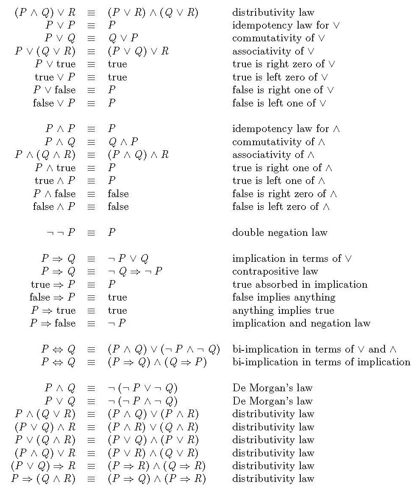
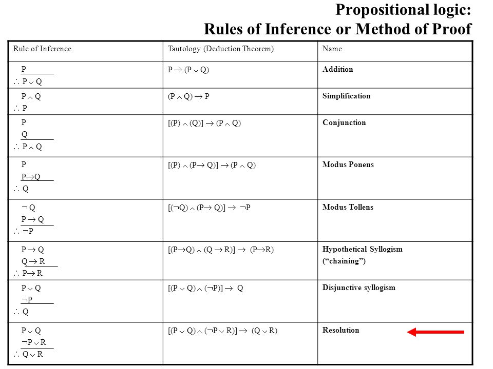
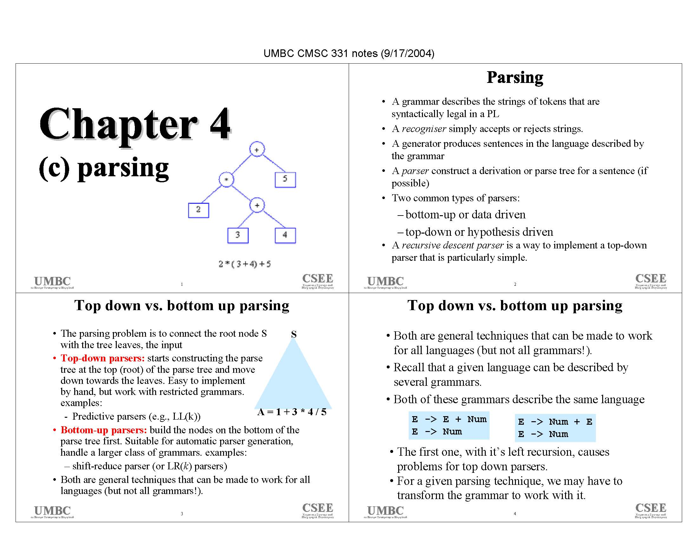

To design an automated system (machine) that has the abillity to think and solve a problem without human intervention.
Definition of AI
AI is the branch of computer science concerned with designing intelligent computer systems that exhibit intelligent behaviour like humans.
It deals with symbolic, non-algorithmic methods of problem-solving.
It is the study of how to make computers do things which at the moment humans do better.
4 Dimensions of AI
Systems that think like a human (thinking humanly): To make a program that thinks like a human, one should know how humans think. This can be visualised using:
Introspection: Trying to analyse one's own thoughts.
Cognitive Science: Bringing together models from AI and Psychology and trying to create precise theories on the working of human mind.
Systems that act like a human (acting humanly): Alan Turing suggested that human intelligence is unique in it's own way because humans possess the following capabilities:
Natural Language Processing (NLP)
Knowledge Representation: The abillity to represent knowledge using a set of symbols.
Automated Reasoning: Solving a new problem using experiences gained from previous similar problems.
Machine Learning
Systems that think rationally (thinking rationally): Aristotle, a philosopher, was the first person to attempt to codify "right" thinking through a system of deriving correct conclusions using accurate premises.
Systems that act rationally (acting rationally): A rational agent is one which with the use of sensors perceives its environment and acts to achieve the best outcome possible in the given environment.
Need of AI
Computers are used in several fields such as:
Numerical Computation
Information Storage
Repetitive Operations
But all these tasks are mindless and mechanical. Humans are much better than machines in performing intelligent tasks.
Difference between knowledge and intelligence
Knowledge
Intelligence
It can be defined as a piece of information that helps in intelligent decision making.
The abillity to reason, trigger new thoughts, perceive and learn is called intelligence.
Application areas of AI
The main application areas of AI are:
Natural Language Processing (NLP) : To make a computer understand written text in human language. It involves only written language processing. Many computational techniques like
Morphological
Syntactic
Symantic
Pragmatic
are used for analysing naturally occurring text.
Understanding spoken language is much harder than understanding written language.
Refer to the block diagram for NLP in the notebook
Expert Systems: These are automatic consulting systems that provide expert conclusion about specialised areas like:
Business
Science
Engineering
Military
They are also sometimes responsible for the automation of following critical tasks:
Medical Diagnosis
Equipment Repair
Computer Configuration
Financial Planning
Robotics: It is the field of AI which enhances the abillity of a machine to move and act in the world with the same degree of responsiveness and flexibility as that of a human in the outside world.
Theorem Proving: Theorem proving is an intensive intellectual task because it requires deductions from hypothesis and also involves judgement, based on a large amount of specialised knowledge.
Game Development: AI is highly instrumental in game development as many games like tic-tac-toe or chess that require seeing patterns, making plans, searching combinations, judging alternative moves and learning from experience.
Computer Vision & Speech Recognition:
Computer Vision: Most sensor cameras provide the computer with 2D information of the world. But the world is 3D in nature and humans too perceive this world in 3 dimensions. Hence computer vision techniques are needed to provide the computer with the essential 3D knowledge of the world around it in order to make intelligent decisions.
Speech Recognition: is the abillity of the computer to
accept spoken word as dictation or voice commands, and then
to respond accurately to these voice commands
Objectives of AI
Cost-effective automation
Cost-effective intelligence amplification
Super-human intelligence
General problem solving & learning
Understand human cognition
Intelligent information storage and retreival
Coherent Discourse: Communication using Natural Language Processing
AI Techniques
Search: provides a way of solving problems for which no direct approach is available
Use of Knowledge: provides a way of solving complex problems by exploiting the structures of the objects that are involved
Abstraction: provides a way of separating important features and variations from many unimportant ones
Turing Test
Refer to the diagram for Turing Test in the notebook
Alan Turing proposed an imitation game which we refer to as Turing Test to check a machine's intelligence. Turing Test verfies/ measures the performance of a machine, in terms of intelligence, against that of a human.
In this test, there will be a machine (A) and a human (B). Both will be in different rooms. Further there would be an interrogator (C) who is not able to talk to A or B directly. All A, B and C use a textual device to talk to each other.
Different questions/ queries of different complexities are asked by the interrogator. Based on the response provided by A and B, C will check the correctness of the response. At the end if C is not able to differentiate between the machine and human then it'll be said that the machine is intelligent.
Criticism of Turing Test
Intelligence should be defined in a positive sense, for example, for a machine to do the assigned work properly and efficiently. Befooling someone is not intelligence.
Incorporating intelligence in a machine means developing the abillity in the machine to accomplish the task faster. Turing Test does not talk about the performance (in terms of speed) of the system. It simply measures the intelligence level of the machine.
A computer's performance is also measured in terms of space or memory it requires in order to perform the assigned tasks. It is well known that the computer is much better in terms of memory management and retention than us humans. However the Turing Test does not discuss anything on this aspect.
Another similar test: Chinese Room Experiment
Chinese Room Experiment was proposed to exhibit the fact that a system running and passing the Turing Test might not have understanding.
In this experiment a human who didn't know Chinese was locked in a room with a set of Chinese alphabets. Then he was provided with a small story, in which a few instructions were present in English to correlate the two sets of symbols. At the end he was provided with a set of questions to be answered, supported by instructions in English.
The human provided very satisfactory answers to the questions in Chinese provided even when he had no formal knowledge of the language, thereby creating the illusion that the person knew Chinese.
According to Turing Test, this machine should be considered intelligent. However, we can clearly see that the machine was simply involved in manipulation of the formal symbols of the language in a way that lacked any understanding on part of the machine.
Components of AI
Theoretical Components
Problem solving using heuristic techniques
Knowledge representation using symbols
Theorem Proving
Natural Language Proving (NLP)
Game Playing
Expert Systems
Computer Vision
Software Components
Machine, Assembly and High-level language
OOP concepts
Comparison between Computer and Human Skills
Computer Skills
Can efficiently handle big numerical computation
Can efficiently handle large amount of information storage
Can efficiently perform a task repeatedly
Human Skills
Flexible reaction in any situation
Find similarities between situations despite differences which may separate them
Find differences between situations despite similarities which may link them
Types of AI
Strong AI: believes that it is possible for machines to become self-aware and to think almost equally in abillity to that of a human.
Weak AI: belives that some thinking abillity can be added to computers to make them more useful tools for specific problem solving or reasoning tasks, even if it doesn't emcompass the entire range of human cognitive abillity.
Eg. Making the computer able to play chess.
Practical Systems based on AI
Autonomous Vehicles (in a project funded by DARPA)
Computer Chess (Deep Blue by IBM deafeated World Chess Champion Gary Kasparov)
Mathematical Theorem Proving (Computer system at Argonne National Lab proved a mathematical conjencture on algebra)
Advanced User Interface (PEGAUSS a spoken language interface to American Airlines Reservation System)
Part 2: Problem Solving through AI
AI systems have been developed which solve problems in a specific domain. However most real-world problems encompass different domains and hence AI systems that can solve real world problems are still in development. Following are some terms used in AI problem solving:
Problem: What is to be solved
Search Space: Complete set of states including the start and goal states, where the solution to the problem is to be searched
Search: Process of finding the solution in search space
Well-defined problem: A well-defined problem can be described by th following
Initial State
Goal State
Operator or Successor Function: The successor function, for any state X, returns S(X), i.e. the set of states immediately reachable from X.
State Space: Set of all states reachable from the intial state.
Path: Sequence of states traversed through the state space.
Path Cost: Cost of a path traversed is the sum of costs of individual actions taken to traverse along that path.
Goal Test: Test to determine whether a given state is the goal state, from a set of possible goal states
Steps in AI Problem Solving Methodology
Problem Definition: The problem definition must include precise specifications of the intial and the final status of the problem, as well as the various possible intermediate states and corresponding knowledge representation. Some features of good representation are:
Good representations bring objects and relationships together, describing their features and corresponding relationships
Good representations suppress irrelevant details in the problem
Good representations are concise and complete
Good representations take up minimum memory space
Good representations are complete
Problem Analysis: This step helps in abstracting the salient features of the problem that can have an immense impact on deciding the appropriateness of the various possible techniques available for solving the problem.
For eg. In game playing, selection of a winning move involves analysis of the opponent's move.
Knowledge Representation: As we know that the solution of a given problem requires the availability of of related knowledge. Hence, isolation and representation of the knowledge at hand is necessary to solve a problem, as covered in this step.
Depending upon the problem, different types of knowledge might be needed and hence the representation techniques might differ. For eg. 8-queens problem requires storing only the queen's position on the board whereas a NLP application would require the syntax and symantic details of the respective grammar for that language.
Problem Solving: Using the knowledge gathered, choose the best problem solving technique (also called as the search technique) and apply it to the given problem.
Representation of AI Problems
Lexical Part: determines which symbols are allowed in the representation of the problem.
For eg. In chess, this part would contain the possible 8x8 board positions.
Structural Part: describes constraints on how the symbols, determined above, can be arranged.
For eg. In chess, this part would contain the set of legal moves, which provide a way of getting from an initial state to a goal position.
Procedural Part: specifies the set of procedural steps that would help solve us a given problem.
For eg. In chess, this part would contain the set of moves, out of all the possible moves, that would help us bring the board position to a winning position.
Semantic Part: establishes a way of associating meaning with steps taken in solving a problem.
For eg. In chess there is never a hidden meaning behind any move. However in an NLP application there is a "message" associated with any sentence which needs represntation.
Defining problems as a State Space Search
The following steps are involved in formally defining a problem as a state space search:
Defining State Space: conatins all possible set of states reachable from the initial state
Initial State
Goal State
Operators (Rules) : set of rules that define the actions available
Production System?
An AI System developed for solution of any problem is called a production system.
Once a problem is suitably analysed and represented, the production system is used for applying the rules and obtaining the solution. A production system consists of the following components:
Set of Production Rules: Production rules are of the form P -> Q.
The left hand side of the rule determines the applicability of the rule and the right hand side describes the output, if the rule is applied.
Global Database: One or more knowledge databases exist which contain all the information for the solution of the particular problem at hand.
Control Strategy: It specifies the order in which the rules will be picked from the database and applied so as to obtain a solution to a given problem in a way such that no conflicts arise when several rules are picked simultaneously.
Rule Application: Finally out of all the rules picked, the applicability of the rule(s) is checked by matching the current state with the LHS of the rule.
Features of Production Rules
Simplicity
Expressiveness & Intuitiveness
Conflict Resolution
Modularity & Modifiability
Knowledge Intensive
Characteristics of Production System
Data Structures: After the definition of a problem, it should be represented in a suitable data structure for easy visualisation and solution-finding. Trees and graphs are often used for this purpose. In such a case, the different nodes correspond to the different attainable problem states, while the arrows correspond to the valid transitions between those states.
Control Strategies: Also known as search strategies, control strategy is responsible for obtaining the solution of the problem. Various characteristics of a control strategy are:
A good control strategy should always cause motion, i.e. the problem should always move towards it's solution on the application of a control strategy.
A good control strategy should be systematic, i.e. the general selection of a rule for the solution for a problem should always be systematic.
General algorithm of Problem Solving
Choose an appropriate data structure for representing the initial state, goal state and the corresponding production rules from the knowledge database.
Until the goal is achieved, perform the following
Begin
Select a suitable rule from the set of rules and apply it to the data
Make the new attained state as the current state
End
Part 3: Examples of AI Problems
Tic-Tac-Toe
Problem Statement: This game has two players, "X" and "O" and a board of 9 squares. Each square can be filled by either of the two players in a way that no square is over-written if it's already filled. One of the two players may win if they manage to make their mark in one of the rows, columns or diagonals entirely.
In terms of AI, this problem can be represented as below:
Data Structure: A 9 element array (vector) is used to represent the the 9 different board positions in the following way:
Board Positions: {1,2,3,4,5,6,7,8,9}
Any valid/ legal state is represented in accordance with the following rules:
A board position is represented with '0' if it's a blank, unfilled position
A board position is represented with '1' if it's filled with 'O'
A board position is represented with '2' if it's filled with 'X'
So the starting state is always {O,O,O,O,O,O,O,O,O}
Winning state will always contain the following similarly occupied combinations:
{1,2,3}
{4,5,6}
{7,8,9}
{1,4,7}
{2,5,8}
{3,6,9
{1,5,9}
{3,5,7}
Hence two possible goal states are {2,0,1,1,2,0,0,0,2} (corresponding to 7th bullet above) or {2,2,2,0,1,0,1,0,0} (correspoding to 1st bullet above)
Operator: Change an empty cell to either 'X' or 'O'.
State Space: Every possible state in the transition table will be a vector having 9 elements each.
Water-Jug Problem
Problem Statement: We have two water jugs with no measuring marks on them. The capacities of the jugs are 3 litre and 4 litre. It is required to fill the bigger jug with 2 litre of water. You may use extra water for this purpose from a water source given to you.
In the terms of AI, this problem can be represented as below:
State Space: In this problem, we can use ordered pairs as (x,y) to depict the amount of water in the two jugs, where
x represents the amount of water in the 4 litre jug
y represents the amount of water in the 3 litre jug
So
Start State: (0,0)
Goal State: (2,0)
Possible Production Rules: are as following
(x, y) -> (4, y): Fill the 4 litre jug entirely
(x, y) -> (x, 3): Fill the 3 litre jug entirely
(x, y) -> (x-d, y): Pour some water out from the 4 litre jug
(x, y) -> (x, y-d): Pour some water out from the 3 litre jug
(x, y) -> (0, y): Empty the 4 litre jug
(x, y) -> (x, 0): Empty the 3 litre jug
(x, y) -> (4, y-(4-x)): Fill the 4 litre jug using 3 litre jug until 4 litre jug is full
(x, y) -> (x-(3-y), 3): Fill the 3 litre jug using 4 litre jug until 3 litre jug is full
(x, y) -> (x+y, 0): Pour all water from 3 litre jug into 4 litre jug
(x, y) -> (0, x+y): Pour all water from 4 litre jug into 3 litre jug
(0, 2) -> (2, 0): Pour 2 litre from 3 litre jug into 4 litre jug
(2, y) -> (0, y): Empty 2 litres of water from 4 litre jug on the ground
Solution: as below
Rule Applied
Water in 4 litre jug
Water in 3 litre jug
Start State
0
0
2
0
3
9
3
0
2
3
3
7
4
2
5
0
2
9
2
0
8-Puzzle Problem
Problem Statement: There's a 3x3 board having 9 block spaces. Out of those 9 block spaces, 8 are filled with a number each, while one space is left blank. Our aim is to arrange the tiles in an ordered sequence. The only operation we can perform is shifting any tile to an adjacent empty block space.
What we actually need to do is generate a search tree for the start state.
We DO NOT move the elements already in place. We instead move our BLANK. The blank can shift in at max 4 possible positions: north, south, east, west.
We derive a new state with every move of the blank. For eg. if we have a state containing the blank, free to move in 4 directions (as mentioned above), we will derive 4 NEW states out of that initial state.
We then compare these 4 states with each other with the purpose of choosing the best state out of them so as to proceed further in our process of finding the solution. BUT HOW DO WE COMPARE THEM?
Keep the goal state in mind when analysing every state. For every element out of it's place with respect to the goal state, we calculate it's displacement from it's assigned place. The state with the least displacement gets chosen for the next step.
The fundamental idea of operation is that if we keep choosing and moving forwad with the best available state at hand at every step, we will eventually end up at the solution state.
So the start and goal states for the problem could be
Start State: It can be any configuration. Let us take the start state to be
2
8
3
1
6
4
7
_
5
Goal State: Given the rules and the above start state, the corresponding goal state would look like
Problem Solution: So solving the given problem at hand,
Intial State:
2
8
3
1
6
4
7
_
5
Step 1:
(a)
2
8
3
1
6
4
_
7
5
Displacement = 6
(b)
2
8
3
1
_
4
7
6
5
Displacement = 4
(c)
2
8
3
1
6
4
7
5
_
Displacement = 6
Displacement of a state is always calculated by the sum of the distances of the number of elements NOT in their right position, from their correct position as in the goal state.
Since (b) has the least score, we choose (b) for the next step.
Step 2:
(a)
2
8
3
_
1
4
7
6
5
Displacement = 5
(b)
2
_
3
1
8
4
7
6
5
Displacement = 3
(c)
2
8
3
1
4
_
7
6
5
Displacement = 5
(c)
2
8
3
1
6
4
7
_
5
Displacement = 5
We go forward with State (b).
Step 3:
(a)
2
3
_
1
8
4
7
6
5
Displacement = 4
(b)
2
8
3
1
_
4
7
6
5
Displacement = 4
(c)
_
2
3
1
8
4
7
6
5
Displacement = 2
We go with state (c).
Step 4:
(a)
1
2
3
_
8
4
7
6
5
Displacement = 1
(b)
2
_
3
1
8
4
7
6
5
Displacement = 3
We go with state (a).
Hence we finally get the goal state:
1
2
3
8
_
4
7
6
5
Missionaries and Cannibals Problem
THIS PROBLEM HAS AN ALTERNATIVE SOLUTION, AS GIVEN BELOW
Solution, as given in notes
Bank 1
Bank 2
MMMCCC
0
MMMCC
C
MMMC
CC
MMCC
MC
CCC
MMM
CC
MMMC
0
MMMCCC
Alternative Solution
Bank 1
Bank 2
MMMCCC
0
MMMCC
C
MMCC
MC
CCC
MMM
CC
MMMC
0
MMMCCC
Problem Statement: Three missionaries and three cannibals are standing on one side and need to cross the river. There is only one boat avaialable, which can carry a max of 2 people at a time. Also at any point of the time, the number of cannibals must not exceed the number of missionaries on either of the banks.
Let us work towards obtaining a solution for the problem at hand, with the sign conventions as:
M: Missionary
C: Cannibal
Production Rules: for this problem are as following
Bank 1
Boat
Bank 2
Start State
(3M, 3C)
(0M, 0C)
(0M, 0C)
1
(2M, 3C)
(1M, 0C) *from bank 1 to 2*
(1M, 0C)
2
(2M, 3C)
(1M, 0C) *from bank 2 to 1*
(1M, 0C)
3
(1M, 3C)
(2M, 0C) *from bank 1 to 2*
(2M, 0C)
4
(1M, 3C)
(2M, 0C) *from bank 2 to 1*
(2M, 0C)
5
(2M, 2C)
(1M, 1C) *from bank 1 to 2*
(1M, 1C)
6
(2M, 2C)
(1M, 1C) *from bank 2 to 1*
(1M, 1C)
7
(3M, 1C)
(0M, 2C) *from bank 1 to 2*
(0M, 2C)
8
(3M, 1C)
(0M, 2C) *from bank 2 to 1*
(0M, 2C)
9
(3M, 2C)
(0M, 1C) *from bank 1 to 2*
(0M, 1C)
10
(3M, 2C)
(0M, 1C) *from bank 2 to 1*
(0M, 1C)
Sequence of Rule Application & Solution: as below
Production Rule Application & Problem State
People at River Bank 1
People at River Bank 2
Boat Position
Start State
M, M, M, C, C, C
0
Bank 1
Rule #5
M, M, C, C
M, C
Bank 2
Rule #2
M, M, C, C, M
C
Bank 1
Rule #7
M, M, M
C, C, C
Bank 2
Rule #10
M, M, M, C
C, C
Bank 1
Rule #3
M, C
C, C, M, M
Bank 2
Rule #6
M, C, M, C
C, M
Bank 1
Rule #3
C, C
C, M, M, M
Bank 2
Rule #10
C, C, C
M, M, M
Bank 1
Rule #7
C
M, M, M, C, C
Bank 2
Rule #10
C, C
M, M, M, C
Bank 1
Rule #7
0
M, M, M, C, C
Bank 2
For problem rule application, please refer to bullet #1
The Monkey Banana Problem
STUDY OF THIS PROBLEM REQUIRES A REFERENCE TO ADDITIONAL MATERIAL
Please refer to the state transition diagram mentioned in the notes for this problem
Problem Statement: is as below
There is a monkey at the door of a room.
In the middle of the room, from the ceiling, hang a bunch of bananas.
The monkey is hungry and wants to eat the bananas. However he cannot stretch or jump high enough from the floor itself so as to snatch the bunch of bananas hanging from the ceiling.
There is a window in the room. Near that window lies a box which the monkey may use to get the bananas.
State Space Representation: as below
Position of the monkey : represented by M
Position of the box : represented by B
Whether the monkey is on the box : represented by X. If the monkey is on the box, X = 1. Else X = 0.
Whether the monkey has the bananas or not : represented by Y. If the monkey has the bananas, Y = 1. Else Y = 0.
Hence
Initial State: (door, windows, 0, 0)
Goal State: (*, *, *, 1)
Here * is a state space variable where it could mean anything. The only constant in the goal state is that the monkey must have the bananas with him, as indicated by Y = 1.
Production Rules: as below
Initial State
Action/ Operator
End State
Description/ Remark
(M, B, 0, 0)
---- walk (P) ---->
(P, B, 0, 0)
Walk (P): Monkey goes to any position P
(M, M, 0, 0)
---- walk (V) ---->
(V, V, 0, 0)
Push (V): Push box to any position V
(M, M, 0, 0)
---- climb ---->
(M, M, 1, 0)
Climb: Monkey climbs the box to reach for the bananas
(M, M, 1, 0)
---- grasp ---->
(M, M, 1, 1)
Grasp: Monkey grasps the bunch of bananas
8-Queen Problem
Problem Statement: We have 8 queens on a 8x8 chessboard. Any queen can attack any other queen in the same row, column or diagonal. Hence in this problem we have to find the proper placement of queens on the chessboard in such a way that no two queens attack each other.
State Representation: Arrangement of the 8 queens on the board is a state.
Initial State: Empty chessboard with no queens.
Successor Function: Add a queen to an empty square.
Goal State: With all 8 queens on the chessboard, they are so positioned that no two queens can attack each other.
Travelling Salesman Problem
Problem Statement: A salesperson is required to travel to a certain given number of cities, with their respective inter-city distances specified to us. We are required to find the shortest route possible for the salesman to travel in such a way that the salesman can travel all the cities exactly once and come back to the city he started with.
We can see that the number of routes between cities is proportional to the factorial of (no. of cities - 1). So as the no. of cities increase, Travelling Salesman Problem becomes a NP Hard problem. We will later try and solve this problem using the Heuristic technique.
Tower of Hanoi Problem
STUDY OF THIS PROBLEM REQUIRES A REFERENCE TO ADDITIONAL MATERIAL
Please refer to the the diagrammatic representation for the initial and goal states for this problem, in the notes. Also have a run-through of the problem from any tutorial on YouTube.
Problem Statement: There can be differing number of poles and disks in this problem, hence for this problem we're going to limit ourselves to a problem with 3 poles and 3 disks.
The problem has 3 poles in consideration. There are 3 disks, of differing sizes on the left-most pole, called the source pole, in a decreasing order of size from bottom to top (largest disk on the bottom, smallest on the top). The objective is to transfer these disks in the same order to the right-most pole, using the middle pole. No larger disk can sit on a smaller disk under any circumstances.
Chess
Start State: Any random inital configuration of the chess board
Goal State: Any board configuration which presents an opportunity to the player to win the game
State Space: Whenever any player moves a piece it gives rise to a different state of the game. A chess game can have 10120 possible states.
Magic Square
A magic square is a square made of individual rows and columns. Each row and column is further divided into cells. So a magic square with 3 rows and 3 columns (represented as a 3x3 magic square) has 9 cells. Each cell, further, is filled with consecutive numbers. A 3x3 magic square hence has 9 consecutive numbers. The numbers in a magic square are there because they satisfy a special property. That property is:
The numbers in each row, column or diagonal add up to the same value.
Hence in this problem, we have to find these numbers. So, let's begin with assuming the following initial state for the square, with x1...x9 representing the different numbers forming the magic square.
Initial State
x1
x2
x3
x4
x5
x6
x7
x8
x9
So how do we solve it? Let's start!
Algorithm
Step 1: Find the sum of numbers in each row/column/diagonal, using the following formula:
Sum of Numbers Used
---------------------- = 45/3 = 15
Number of rows/columns
Step 2: Using the sum we obtained in the step above and the initial state, we can form the following equations:
In a similar fashion we can continue assuming values for our remaining variables and keep checking whether our assumptions satisfy the above given equations. If they do, we continue with our assumptions. Else we change our assumptions.
Hence we can continue with the following assumptions, which satisfy the above equations, thus producing the 3x3 magic square as given below.
8
1
6
3
5
7
4
9
2
AI Problem Characteristics
Decomposable Problem: Is the problem decomposable into smaller sub-problems?
Some problems can be broken down into smaller sub-problems, which are individually easier to solve and the solution of the larger problem can be obtained by joining the solutions of these smaller sub-problems.
For eg. integrals are solved in parts and then individual solutions are combined for the complete solution.
Recoverable Problem: Is backtracking possible?
In recoverable problems, we can reverse the application of an operator if required, and on the initial state another operator can be applied to obtain another desirable state.
For eg. 8-Puzzle problem is a recoverable problem while Chess is not.
Predicatble Problem: Is the problem's answer predictable?
In predicatble problems, outcome of a particular move can judged with definiteness.
For eg. The 8-Puzzle problem.
Is a good solution absolute or relative?: Is a good solution to the problem obvious?
There are some problems where the occurance of any one solution is enough and there is no need to ensure the validity of this solution by finding the other solutions. On the other hand there are problems where all solutions need to be found out and tallied against each other so as to find out the most optimum solution.
For eg. as in Travelling Salesman Problem, finding only a single route isn't enough because it could or could not be the best route. Hence we need to find all of them and tally them against each other to find out the shortest route.
Is the desired solution a state or a path?: Understanding with an example, in medical diagnosis, the solution isn't just limited to finding the correct medicine for the diagnosis, but is almost always a long and complicated process that requires a constant care and attention given to the patient along with the medical care.
However solutions to problems are sometimes only answers that are treated as a state, in contrast to the abpve scenario which is treated as a path.
Is more knowledge required to find the solution or is knowledge only important to constrain the search?: Some problems require minimal knowledge necessary to find the solution.
For eg. Tic-Tac-Toe.
However in medical expert systems, the amount of knowledge required is huge. Hence such problems are called knowledge intensive problems.
Search Space Search Techniques
Blind (Unguided or Uninformed) Search: is performed when no additional knowledge regarding the other states in the state space is provided. Hence it is absolutely necessary that we look at the entire search space for the next state.
Heuristic (Guided or Informed) Search: is performed when additional knowledge regarding the problem is provided to direct the search in a specific direction.
Blind Search Algorithms
STUDY OF THIS PROBLEM REQUIRES A REFERENCE TO ADDITIONAL MATERIAL
For BFS, kindly refer to the notes for the accompanying diagrams.
Breadth-First Search (BFS): Elementaries for the BFS Search Algorithm are as below:
State Space is represented in the form of a tree and solution can be obtained by traversing through the various nodes in the tree.
In BFS, for every node we traverse, the root node is expanded first and then all the successions of the root node and so on.
While traversing, all the nodes on one level are explored first before moving on to the next level.
The data structure used for implementing BFS is a Queue (FIFO).
Algorithm
Create a variable called NODE_LIST and set it to the intial state.
Until the goal state is found or the NODE_LIST becomes empty, do the following:
Remove the first element from the NODE_LIST and call it E. If th NODE_LIST is empty, exit.
For each E, do the following:
Apply the rule to generate a new state.
If the new state is the goal state, return this state and quit.
Else, add this state to the end of the NODE_LIST.
Advantages of BFS
In case of a problem where multiple solutions exist, BFS finds the minimal solution first, which requires the least number of steps to reach.
Disadvantages of BFS
Although it's good for problems with multiple solutions, it's very inefficient for problems with a single solution as it explores all possible branches which may lead to spending a lot of unnecessary time for exploring all the paths.
Memory consumption is very large because nodes on all the various path emerging from a single root node are explored.
Depth-First Search (DFS): Elementaries for the DFS Search Algorithm are as below:
DFS always expands the deepest node in the current fringe of the search tree.
It explores the left most successor root node and expands it until a dead end is reached. In that case, the algorithm goes back to the next shallowest node with unexplored successors.
The data structure used for implementing DFS is a stack (LIFO).
Algorithm
If the intial state is the goal state, return and quit.
Else, do the following until success or failure:
Generate successor E of the intial state. If no more successors, then report failure.
Call DFS with E as the intial state.
If success is reported, return the state. Else continue exploring.
Advantages of DFS
It requires less memory because nodes only on a single path are explored first before exploring other paths.
In case of a problem where only a single solution exists, DFS may find the solution relatively easily without exploring much of the search space.
Disadvantages of DFS
Finding a solution using DFS in a problem where there might be more than one solution does not guarantee that the solution found is the most efficient one.
DFS may follow a single unfruitful path for a very long time without having a larger idea of the problem.
Heuristic Search
Heuristics is nothing but an informed guess of the next step to be taken in attempting the solution of the problem.
It might not always find the best solution, but is guaranteed to find a good solution in a reasonable time. Hence it is useful in solving tough problems which couldn't be solved in any other way or where the process to find a solution may take an infinitely long time, using the traditional methods.
In heuristic search, unlike normal searching techniques, besides normal production rules, some additional information or knowledge about the problem is given in form of a mathematical function called the heuristic function. Because of the presence of this extra information, heuristic search is also called informed/ guided search.
Heuristic Search can be applied in the following scenarios:
When the problem does not have an exact solution because of the inherent ambiguities in the problem statement or the data available.
For eg. In medical diagnosis, if there are several symptoms indicated by the patient pointing towards different diseases, a heuristic technique is adopted so as to find the most likely disease.
When a problem is having a solution but the cost of finding that solution is unbearable.
For eg. In chess as the no. of possible states are huge, BFS and DFS techniques are inefficient in finding a solution in an acceptable time limit. Hence heuristic search techniques are used to handle problems like these by guiding the search and eliminating un-promising states from the state space.
Heuristic Search Algorithms
THE SOLUTION OF THIS PROBLEM IS EITHER NOT COMPLETE OR NOT FULLY UNDERSTOOD
Understand 8-Puzzle Problem solved using Hill Climbing Search Algorithm
STUDY OF THIS PROBLEM REQUIRES A REFERENCE TO ADDITIONAL MATERIAL
Refer to the notes for diagrammatic representations of the "Limitations of Hill Climbing Search"
Generate and Test: This is a very simple heuristic search approach where first a result is generated and then tested whether it is the desired solution or not.
Algorithm
Generate a possible solution to the problem. It can either be a point in the problem space or a path from the initial state.
Test this solution against the goal state to see if it is the desired solution.
If the obtained solution matches against the goal state, exit. Otherwise repeat from 1.
Hence there are 2 ways we can carry forward a Generate and Test search:
Generate a random solution and test. If found wrong, generate another random solution and test. Hence in this way it might be possible that the very first generated solution gets matched with the goal state.
Adopt a systematic approach towards generating and testing solutions. It might take a lot of time and certainly requires a large problem space.
Generate and Test is overall good for simple problems only and not accpetable for problems with a large problem space.
Best First Search: is a combination of BFS and DFS. How?
BFS: As in BFS, there is no chance of getting trapped on a dead end path.
DFS: As in DFS, all branches neeed not be expanded in order to get the solution.
By combining these two techniques, Best First Search follows only a single path an any time, switching paths in between intelligently whenever another path looks more promising than the current one. But how's the better path decided amongst two or more competing paths?
Every node in the problem graph upon which Best First Search is being applied, is associated with an evaluation function. The value of the evaluation function depends upon the distance of the current node from the root node. Hence only the most promising route is traversed in Best First Search, with the value of the evaluation function helping to decide the best route amongst a number of candidate routes. This may also be called as Greedy Best First Search.
In Best First Search, two lists are required for operation:
OPEN: Nodes discovered but not yet expanded for child nodes
CLOSED: Nodes discovered and successfully expanded for child nodes
Algorithm
Put the initial node into the OPEN list
If OPEN = EMPTY or OPEN = GOAL, exit. Else, remove the first node from OPEN (say A).
If A = GOAL, exit. Else generate all child nodes of A, add A to CLOSED list and it's child nodes to OPEN list, in the order of their value of their respective evaluation function values.
Go back to step 2.
A* or Optimal Search
THE SOLUTION OF THIS PROBLEM IS EITHER NOT COMPLETE OR NOT FULLY UNDERSTOOD
Understand the state-space representation & general working of A* Algorithm on Tower of Hanoi problem
The A* Algorithm is a specialisation of the Best First Search Algorithm, the only difference being that in this case, the evaluation function is of the form as given below:
f(n) = g(n) + h(n)
where
g(n): gives the path cost from the start node to node n h(n): is the estimated cost of the cheapest path from node n to the goal node
f(n): summation of g(n) and h(n). It gives the estimated cost of the cheapest path from start node to goal node passing through n
The A* Search Algorithm is both optimal and complete only if the algorithm never over-estimates the path cost between two particular nodes (admissible heuristics).
A* Search Algorithm uses OR-Graph to find the solution of the problem.
A* Search Algorithm
Place the starting node in the OPEN list.
For reference, to what is OPEN and CLOSE lists, refer to their description in Best First Search.
If the OPEN list is empty, stop and return failure. Else remove from OPEN list the node n with the lowest value of f(n). If that node is the goal node, return success and exit.
Expand n by generating all of it's successors and put n in the CLOSED list.
For every node, whether be n or it's successors, check if it's already in the CLOSED list or if there's a node with an equal or lower cost estimate already available. If so, we can safely disregard n, or it's successors and move on.
If there's no better version of n found either on the OPEN or CLOSED lists, then remove all the inferior copies from those lists as n is superior to them all.
Add this least cost node at the beginning of the OPEN list and return to the beginning of the loop, right at the start of the OPEN list.
Problem Reduction
STUDY OF THIS PROBLEM REQUIRES A REFERENCE TO ADDITIONAL MATERIAL
Refer to the notes for the AND-OR Graph best path determination
Sometimes problems can be solved in a better manner using a process called decomposition or problem reduction method. In this method problems can be solved by decomposing them into a set of smaller problems and intelligently determining in which order to solve them so that we finally incur the least cost.
We use AND-OR graphs here, unlike in Best First Search(A* Search) where we use OR-Graphs, because here the choice of which node is to be expanded depends not only on it's f value, but also whether that node is part of the best (least cost) path.
Futility: The term futility refers to the cost value above which a solution path is considered to be too expensive to be practical.
We use the concept of problem reduction to devise another heuristic search algorithm, with the name of AO*. It'd be wise to study AO* Search Algorithm while we are discussing Problem Reduction, as given below.
AO* Algorithm
It uses AND-OR graph for problem reduction.
It generates a GRAPH from a larger search graph comprising of all the nodes in the search space.
During the GRAPH generation, it traverses nodes and marks them either SOLVED or UNSOLVED. The problem is assumed to be solved when the start node is marked SOLVED.
Algorithm
Terminology: Please understand the following terms which will be used in the algorithm:
GRAPH: The search graph yet traversed and generated.
INIT: The source node you start your algorithm with.
CURRENT: A particular node amongst all the SUCCESSORS.
SOLVED: A node that has been fully explored and there exists a minimum cost path h(n) for the SOLVED node n.
Coming to the actual algorithm,
In the beginning, let GRAPH consist of only the initial state, INIT. Compute h(INIT).
Until INIT is marked SOLVED or h(INIT) > FUTILITY, repeat the following steps:
Generate the successors of INIT. Call one of them NODE, to be further operated upon.
Generate the child nodes of NODE and depending upon the outcome, perfome the following steps:
If no child nodes exist, mark h(NODE) as FUTILITY, equivalent to saying that NODE is unsolvable.
If child nodes exist, further referring to them as SUCCESSORS, perform the following:
Add SUCCESSOR to GRAPH
If SUCCESSOR is a terminal (leaf) node, mark it as SOLVED and assign h(SUCCESSOR) = 0.
Else compute h(SUCCESSOR).
Now since new child nodes have been traversed and added to the GRAPH, h (cost) values for the parent nodes need to be changed. Let S denote all the SOLVED nodes in the GRAPH. Hence until S is empty, perform the following steps:
Select a node from S. Call it CURRENT.
Expand CURRENT until all it's child nodes are known. Now compute the h values along all of these child nodes and assign the CURRENT's h value as the minimum of these examined nodes' h values. The costs are determined as following:
cost of the arc + h value of the node at the end of the arc
Mark the best path out of CURRENT along the arcs which lead to the path with the minimum cost (min. h value).
Mark CURRENT as SOLVED if all of it's child nodes and their subsequent exapnsions have been marked as SOLVED. Also, if CURRENT gets marked as SOLVED or gets changed in value, propagate this changed value back to all the ancestor nodes of CURRENT.
Constraint Satisfaction: Constraint Satisfaction is a problem solving method applicable to those categories of of problems where a goal state is not specified. These problems are defined using a set of variables (x1, x2...xn) and a set of constraints (c1, c2...cn). Further each variable xi is assigned a value vi. The general problem is to find a solution that satisfies the given set of constraints.
Graph Problems are one such example of these type of problems.
Algorithm
Set OPEN to all the variables that must be assigned a value for the solution to be complete.
Repeat the following until inconsistency (lack of a solution) is found or all the variables get a value
Select a variable from OPEN and apply the respective set of constraints to that variable.
If these constraints being applied are any different to the ones that have already been applied, add to OPEN other variables too that share the same constraints.
After application of constraints is complete, remove this (or these) variables from OPEN.
Following these steps, one of the possible events might take place:
If a solution is hence found, return the solution and quit.
If a contradiction to the variables and their values is found, as a result of the application of its constraints, return failure and quit.
If none of the above mentioned activities happen, keep repeating until a solution is found or all possible solutions are exhausted. Strengthen the constraints of those variables without a value and recursively invoke constraint satisfaction.
Types of Constraints
Unary Constraints: are those which apply on only one variable.
For eg. Indians like spicy food. Here the food (which is spicy) is a constraint applied to the variable in the sentence, Indians.
Binary Constraints: are those which apply on two variables.
For eg. India is militarically stronger than Pakistan. Here the constraint stronger (militarically) applies on two variables: India and Pakistan.
Higher Order Constraints: are those that apply to three or more variables.
Cryptarithmetic Problems
See, these problems are more hit-and-try than anything methodical. So please refer to the video tutorials linked below, and see any of the solved examples in the notes. However while solving, keep the following rules in mind:
There are letters involved. A-Z. They may appear more than once in a problem.
These letters form up words together. These words are just representations for actual numbers that are being operated upon.
The numbers these letters (together forming words) are distinct from one another, unlike the alphabets. So always keep this in mind that one alphabet can have one and only one value in a given problem.
The carry number that comes out of any additive numeric operation can only be a 1. Why? Because all alphabets are distinct; the maximum numbers that can add up to produce a carry are 9 and 8, which when added give 17, hence 1 as carry.
To learn more, refer these videos:
Constraint Satisfaction Tutorial
Cryptarithmetic Problems
Branch & Bound Search Technique: applies to problems having a graph search space where more than one alternate path exists between two nodes.
For eg. Travelling Salesman Problem.
The technique generates a new path in each iteration, while keeping track of the best path traversed as yet. If a branch offers a minimal cost path to the goal state, it is stored as a bound and treated as part of the best path and it's extensions are generated for advancement of the search. Else it (and it's extensions) is discarded.
Algorithm
Enqueue the start node.
Repeat the following steps until the queue gets empty or the goal state is reached:
Check if the first node in the queue is the goal node.
If it's a goal node, then report success and exit. Else dequeue it and enqueue it's child nodes.
Compute the cost of the new paths and sort them in the queue.
Otherwise exit with failure.
Hill Climbing Search: This technique uses feedback from the test procedure in deciding in which direction the search should proceeed. It is useful for solving a problem where knowledge of path is not important and hence no search tree is required. This technique only a current state and an objective function to determine it's path.
Algorithm
Evaluate the intial state.
If it's the goal state, return and quit.
Else continue with the initial state as the current state.
Loop through the following instructions until the goal state is found or there are no new operators left to be applied to the current state
Select an operator that has not been yet applied to the current state and apply it to produce a new state
Evaluate the new state
If it is the goal state, then return and quit
If it is not the goal state but is better than the current state, then make it the current state
If it is not the goal state and neither better than the current state, then continue in the loop.
Limitations
Local Maxima: A local maxima is a peak which is although better than the current state, but ultimately lower than the global peak of the state space. The problem with hill climbing algorithm is that if the searching finds a local maxima, it halts thinking this is the best solution available even though there is a better solution available (global peak) in the state space.
Plateau: A plateau is a flat area of the search space where the next move does not give a better solution than the present state. Hence it becomes difficult to decide where to move.
Ridge: A ridge can have steeply sloping sids so that the search reaches the top with ease. But while near the top, it may slope gently near the peak. Unless there happens to be operators that move directly to the top of the ridge, there might be no change in the heuristic function for a long time and the search could halt after a few iterations.
Mean End Analysis: This technique uses a bidirectional search technique.
Forward Search: starts from the initial state to the goal state.
Backward Search: starts from the goal state to the initial state.
Hence this technique solves the problem in parts and finds the final solution by combining these individual solutions.
A special data structure is used to maintain the difference between the current state and the goal state, called the difference table.
MEA relies on a set of rules to transform one problem state into another. These rule types are as below
Pre-Conditions: Conditions that must be met for the rule to be applicable.
Post-Condition: Result obtained on application of the rule.
Module 2: Knowledge Representation
Why Knowledge Representation?
AI is used to build efficient and economical expert systems that help solve real world problems. These expert systems require huge amounts of knowledge to respond with human-like intelligence. Hence effective, simple but powerful means of knowledge representation is required for the fullfillment of this purpose.
What is knowledge?
STUDY OF THIS PROBLEM REQUIRES A REFERENCE TO ADDITIONAL MATERIAL
Please refer to the diagram representing the mapping between facts and representations
Knowledge is an organized form of data. It can be used for useful purposes.
For eg. when a doctor treats a patient, he uses both the data and knowledge in diagnosis. Data comes from the patient's reports while knowledge comes from the doctor's experience.
It consists of
Facts
Assumptions
Heuristics (Intelligent Guesses)
Different problems require different types of knowledge and hence different knowledge representation techniques exist. A few common ones are as following:
"Spot is a Dog" can be represented as "dog(spot)"
It is worthwhile to notice that the entity outside the brackets is the class while the entity inside the brackets is the object.
"Every dog has a tail" can be represented as ∀x : dog(x) -> hastail(x)
Which can be further deduced using (1) as
hastail(Spot), meaning "Spot has a tail"
Things to consider while Knowledge Representation?
Attributes of objects (like Spot was an object we took as an example above)
Relationship amongst attributes
Granularity (Depth) of representation: (Affects the size of the knowledge base)
Inferencing Mechanism used: An Inferencing Mechanism is used to find the solution of a problem using the knowledge base
Properties of Knowledge Representation Systems
Representational Adequacy: The abillity of the Knowledge Representation System to represent all kinds of knowledge, as needed.
Inferential Adequacy: The abillity of the knowledge representational system to derive new knowledge from the existing, old knowledge structures.
Inferential Efficiency: The abillity to incorporate additional information that can be used to direct the knowledge inference mechanism in the most promising direction.
Acquisitional Efficiency: The abillity to acquire new information using automatic mechanisms without requiring any human intervention.
Types of Knowledge?
STUDY OF THIS PROBLEM REQUIRES A REFERENCE TO ADDITIONAL MATERIAL
Please refer to the diagrams for the respective knowledge types
Relational Knowledge: In this type of knowledge facts are represented as set of relations in a tabular form. The table is composed of attributes and tuples, where tuples are the values the object has for a particular attribute it possesses.
This form of knowledge is very simple and doesn't provide much inferential capabilities.
Inheritable Knowledge: In real world, knowledge might not be like a separate entity as in Relational Knowledge. Instead knowledge may exist in form of inhertable relationships between entities. This forms the basis of Inheritable Knowledge.
Inferential Knowledge: A knowledge representation method which can use inference mechanism to use and expand it's knowledge base is called inferential knowledge.
Procedural Knowledge: refers to conditional knowledge. It specifies when what is to be done.
For eg.
IF:
A student has deposited fees,
The student has opted for a course
The student has attended 90% classes
The student has passed the examination
THEN:
Delare the student pass.
Declarative Knowledge: refers to factual knowledge. Again facts can be of two types:
Static Facts: which do not change with time. Like my gender.
Dynamic Facts: change with time. Like my height.
Heuristic Knowledge: Judgemental knowledge which differs from individual to individual. It refers to the abillity of a person to make informed and educated guesses.
For eg. asking a person which team would win in a fair competition.
Common Knowledge: Domain independent knowledge, general in nature, attained by experience.
Explicit Knowledge: Knowledge that can be easily expressed in mathematical terms and is held in an individual's conscience. This form of knowledge is communicable, universal and can be processed, stored and transferred electronically.
Uncertain Knowledge: Most of the real world phenomena is uncertain. It refers to knowledge that we can provide to the best of our abillity but is never complete or deterministic.
For eg. weather forcasts might show that it'll rain today but we cannot determine it's occurance to the exact minute.
Logic?
Logic is a language used to express knowledge, facts and their interaction. It's used for designing of the knowledge base in AI.
Some elementary knowledge representational techniques are:
Representation in Propositional Logic
Representation in Predicate Logic
Representation in Conceptual Dependency Structures
However logic itself can be of two types in AI:
Propositional Logic or Propositional Calculus
Predicate Logic or Predicate Calculus
Propositional Logic/ Propositional Calculus?
A proposition is any declarative sentence that we say in our day-to-day life which is either TRUE or FALSE.
Propositional Logic/ Propositional Calculus is a language to represent propositions using well defined symbols.
New Delhi is capital of India. -> Valid proposition, as it's TRUE
India will be a superpower by 2020. -> Valid proposition, as it'll be either TRUE or FALSE, but not both
No, thank you. -> Invalid proposition, as it's an assertion
Propositions are of 2 types:
Atomic Proposition: is made of a single proposition.
For eg. Sachin Tendulkar was a cricketer.
Molecular Proposition: is a combination of two or more propositions.
For eg. Sachin Tendulkar is a cricketer and Miranda Kerr is a model.
There are 3 Syntactical Elements of Propositional Logic:
Vocabulary: Set of propositional symbols (Literals, Eg. P, Q, R, etc. where P might represent "It is hot") which represent valid propositions and can either be TRUE or FALSE.
Logical Connectives/ Operators: There are 6 logical operators:
∧ (AND/ Conjunction): P∧Q will be TRUE if both A and B are TRUE. Conjuntcion of two or more sentences is also a sentence.
∨ (OR/ Disjunction): P∨Q will be TRUE if either P, or Q, or both are TRUE. Disjunction of two or more sentences is also a sentence.
! or ∼ (NOT): If P is TRUE, ∼P is FALSE, and vice versa. Also the negation of a literal or a sentence is a literal or a sentence.
→ (Implies/ IMPLICATION): P→Q means that if P is TRUE, the Q is also TRUE and vice versa.
P is called the Premise while Q is called the Conclusion.
↔ (If and Only If/ BI-CONDITIONAL): A biconditional statement, P↔Q holds only if P and Q both have same values.
≡ (EQUIVALENCE): A statement P≡Q means that P and Q both hold the same logical values.
Values: which can be either TRUE (T) or FALSE (F), called logical constants.
Semantics, or meaning of a propositional statement is either TRUE or FALSE. The following truth table helps us understand how/ why a these values are assigned:
P
Q
∼P
P∧Q
P∨Q
P→Q
P↔Q
F
F
T
F
F
T
T
F
T
T
F
T
T
F
T
F
F
F
T
F
F
T
T
F
T
T
T
T
A Well Formed Formula consists of atomic symbols joined with connectives.
"P" is a WFF, since P is a propositional variable.
"∼P" is hence a WFF too.
Further if P and Q are WFFs, then (P∨Q), (P∧Q), (P→Q) and (P↔Q) are WFFs too.
Laws of Propositional Logic
Refer to them from the notes. But a few of them are:

A statement in propositional logic/ propositional calculus can be:
Valid: A sentence is valid if it's TRUE for all inputs (TRUE or FALSE).
For eg. P∨∼P is valid for every value of P.
Satisfiable: A proposition which is TRUE for at least one value.
Unsatisfiable (Contradiction): A proposition which is never TRUE.
For eg. P∧∼P is never TRUE for any given value of P.
Equivalence: Two statements are equivalent when they share the same logical value for every interpretation.
For eg. P and ∼(∼P) are equivalent statements.
Logical Consequence: A statement S2 is said to be a logical consequence of S1 if it is satisfied by all interpretations which satisfy S1.
Inferencing in Propositional Logic?
Inferencing in Propositional Logic refers to deriving new propositions from existing/ given propositions.
A Proposition that is assumed to be true is called as a premise/ hypothesis and a proposition that is derived using the rules of inference is called a conclusion.
Some (NOT ALL) of the rules of inference are as below:

Resolution Algorithm in Propositional Logic
STUDY OF THIS PROBLEM REQUIRES A REFERENCE TO ADDITIONAL MATERIAL
Please ensure that all the numerical examples are solved (Pages 134-135)
Convert all assumed/ given propositions into Clausal Form (A special form of representation of propositions, where different literals have disjunctive relations between them), using the following steps:
Eliminate → and ↔ using the following rules:
P→Q can be simplified as ∼P∨Q P↔Q can be simplified as (∼P∨Q)∧(∼Q∨P)
Reduce the number of ∼ using the following:
Either by cancelling ∼s against each other, for eg. ∼(∼P) = P
Or by using de Morgan's laws, for eg.
∼(A∧B) ≡ ∼A ∨ ∼B
OR
∼(A∨B) ≡ ∼A ∧ ∼B
Convert to Conjunctive Normal Form using the laws of propositional logic.
The literal which is to be proved TRUE, assume it to be FALSE and add it to the set of clauses.
Perform the following until a contradiction is found or no progress can be made (NULL value comes as a result):
Solve two clauses and call them parent
Resolve them together. The result is called as the Resolvent.
If the resolvent is an empty clause or a contradiction, exit. Else add the resolvent to the set of clauses.
Limitations of Propositional Logic
In Propositional logic, we have to declare a rule for each and every sentence, which is not a good approach.
For eg.
All dogs are faithful —> 1
Tommy is a dog —> 2
Tommy is hence, faithful —> 3
Sure 1 is a proposition, as is 2 but 3 is in NO CASE an inference coming from 1 and 2. 3 ≢ P∧Q.
P: Tom is a boy.
But Jim is also a boy. Also we cannot represent Jim with P. Hence every different person will require to be having a different proposition, even though every proposition means the same thing (that a person X is a boy). Hence, it's not a good approach.
Predicate Logic/ Predicate Calculus/ First Order Predicate Logic (FOPL)
Predicate Logic is a generalisation of Propositional Logic, a formal language to represent statements and their relationships as WFFs (Well Formed Formulae).
Relationship between Propositional Logic and FOPL
Propositional Logic
First Order Predicate Logic (FOPL)
Propositional Logic assumes that there are facts that either hold (TRUE) or do not hold (FALSE).
FOPL assumes that there are objects which share real-world relationships that do or do not hold.
Characteristics of FOPL
It has a sound theoretical foundation
Using FOPL, inferencing can be applied upon Predicate Logic
It allows for accurate representation of real world facts (Propositions)
It is commonly used for program design
Components of FOPL
Symbols
Constants: Any fixed value. Must begin with lower case letters. Eg. 6, interest.
Variables: can assume different values and are used to represent real world objects.
Functions: take one or more arguments and return a value.
For eg. x→x2
Predicates: take in variables and return a boolean value.
For eg.x→x is even.
Connectives: Just like propositional calculus, FOPL also uses the following 5 connectives:
Conjunction OR AND OR ∧
Disjunction OR OR OR ∨
Negation OR NOT OR ∼
Implication OR IMPLIES OR →
Equivalence OR ≡
Quantifiers: Two types of quantifiers are used:
Universal Quantifier: ∀
∀x means "for all x"
Existential Quantifier: ∃
∃x means "there exists an (for some) x"
Sentences: are of two types:
Atomic Sentences: An atomic sentence is a type of declarative sentence which is either true or false (may also be referred to as a proposition) and which cannot be broken down into other simpler sentences.
For eg.
brother(Richard, John)
which is interpreted as "Richard is a brother of John" if the statement is TRUE.
Complex Sentences: Any sentence made up of separate individual atomic sentences, combined using logical connectives.
Semantics: define the rules for deriving the value of a sentence (TRUE or FALSE).
Quantifiers
Quantifiers are used to express properties of entire collections of objects. There are two types of quantifiers:
Universal Quantifier: represented as ∀, it is used to represent truth values "for all" of the variables.
For eg.
"All kings are persons." can be represented as "∀king(x) → person(x)"
Existential Quantifier: represented as ∃, it is used to represent truth values which are true for atleast one interpretation. In other words, ∃ states describes that for a particular interpretation, "there exists" a variable which is TRUE.
For eg.
"Some people are sick today" can be represented by "∃x(people(x) → sick(x))", which means that there is atleast one person who is sick today.
Representing facts using FOPLDO IT YOURSELF, pages 142, 143, 144 Inferencing in FOPLDO IT YOURSELF, page 145 Relationship Representation in FOPLDO IT YOURSELF, page 146
Resolution in Predicate Logic (Algorithm)
Convert all statements to clausal form:
Eliminate implications and double-implications using the following rules:
P→Q can be simplified as ∼P∨Q P↔Q can be simplified as (∼P∨Q)∧(∼Q∨P)
Reduce the number of ∼ using the following:
Either by cancelling ∼s against each other, for eg.
∼(∼P) = P
Or by using de Morgan's laws, for eg.
∼(A∧B) ≡ ∼A ∨ ∼B or ∼(∃x : P(x)) ≡ ∀x ∼P(x)
OR
∼(A∨B) ≡ ∼A ∧ ∼B or ∼(∀x : P(x)) ≡ ∃x ∼P(x)
Technically the only thing you'll ever require to do will be, in case of predicates like
∼∃x smiling(x)
In cases like these, you'll operate ∼ against the entire expression, which is composed of two parts:
∃ which describes the "there exists" or "atleast one" part
smiling(x) which shows the function and the variable to which the existential quantifier applies
So ∼ will apply to both the parts, individually:
When ∼ interacts with ∃, it changes into ∀
The ∼ that interacts with the function, remains as it is
So apart from the other two things given above (the de Morgan's laws), do remember this also.
Introduce unique variables for all the objects/ entities involved.
∀x : (P(x) → ∃x(P(x))) is okay.
∀x : (P(x) → ∃x(Q(x))) is NOT okay. Q must be associated with a distinct variable than the one P is associated with. Hence
∀x : (P(x) → ∃y(Q(y))) is okay.
Again, the only meaningful thing that you'll ever be required to do, is to associate every predicate with a unique variable. It doesn't matter what the predicate is, only that every predicate by now should be completely represented by one variable and that variable must be distinct from all other variables being used in all other predicates.
Eliminate Existential Quantifiers: Suppose we get a predicate,
∃x graduating(x)
We need to eliminate the existential quantifier and replace this predicate with the following:
graduating(shyam)
This newly introduced predicate is called the Skolem Function and this process is known as Skolemiation. Using this process, if the existential quantifier appears at any place, we need to replace all occurances of the variable it quantifies with an arbitrary constant not appearing anywhere else in the expression and delete the quantifier.
For eg. ∃x: president(x) is skolemized as president(name)
OR
∀x : ∃y : student(y, x) is skolemized as ∀x: student(teacher(x),x)
Eliminate Universal Quantifiers and bring the expression into the CNF form: Just drop the ∀ quantifiers from the expression and if required, bring the expression into a CNF form (independent terms in the expression must be joined by ∧s).
Now suppose we had to prove P as TRUE. So we assume ∼P is TRUE and add it to the other clauses.
Repeat the following until the result is obtained or no further progress can be made (NULL is obtained):
Select two clauses called the "parent" clauses.
Resolve them together.
If the resolvent is an empty clause, then a contradiction is found. Else if it's not, then add it to the set of clauses available for further resolution.
PLEASE SOLVE THE NUMERICALS YOURSELF
Numericals at Pages 153-156, 159, 161-162, 165-190
Skolemization?
Skolemization is the process of managing quantifiers, summarized as below:
Determine which variables are existential and which are universal. We do this while forming the predicates.
Eliminate all the existential quantifiers.
Rename variables with same names.
Unification?
It might often happen that we have two or more than two copies of the same predicate where they accept arguments that are fundamentally different (with distinct names) in every case. These predicates cannot be resolved.
For eg. bigcity(x) and bigcity(gurugram) cannot be resolved.
Hence Unification is a technique where similar predicates having different arguments are made identical by using substitutions for those variable argumnets.
These substitutions can be made in 3 ways:
Substituion of a variable by a constant
Substitution of a variable by another variable
Substitution of a variable by a function
Any substitution that makes two or more expressions equal is called a Unifier for that expression.
Conversion into Horn's Clauses?
The process is just the same as that of conversion into normal clauses, as we have studied earlier.
Eliminate ↔ and →
Reduce ∼
Standardize variables (each clause should contain it's own unique set of variables)
Eliminate Existential Quantifiers
Remove Universal Quantifiers
Convert into CNF
Forward Reasoning & Backward Reasoning?
In AI, solution search in the problem's search space can be performed in two possible ways:
Forward Reasoning (also called as Forward Chaining): In Forward Chaining, the ES is given the data and it chains forward to reach a conclusion. When the antecedent conditions are met, the rules invoked (IF clauses) are replaced by the RHS (THEN clauses) of the rule. It is also called as data driven search.
The search starts from the start node at the root (data) of the tree representing the solution space.
The search proceeds with the expansion of nodes to the left of the root node that match the rules applicable to the root node (towards the solution).
Continue until a node matching the goal state is found.
For eg. suppose you get an assignment to prepare a report from a given set of books urgently. Now you don't know what exactly this entire set of data contains, just that you have to create a report during the given time (goal state). So you read them, analyse them (start from the data) and create your report (solution).
Backward Chaining (also called as Backward Chaining): It is the reverse process of forward chaining. In this ES is given a hypothesis and it backtracks to check if it is valid or not. It is a "goal-oriented" or "goal-driven" technique as it tries to prove a goal by confirming the truth of all of its premises. Here the interpreter starts with matching the THEN clauses and if a match occurs, it is replaced by the IF clause.
The search starts from the goal node (solution) of the root of the tree representing the solution space.
The search proceeds with the expansion of nodes to the right of the root node that match the rules applicable to the root node (towards the data).
Continue until a node matching the start state is found.
For eg. suppose you wake up one morning with the question in your mind "Whether I should wear my sweater today or not?". You already have the goal state in your mind, which tells us that either we will or won't wear a sweater today. So we decide to go from the solution -> data. We start accumulating data that if it's cold today by either checking our phone or seeing out from the window.
In PROLOG, backward chaining applies because it starts searching from the goal state.
The following factors determine the direction of the reasoning process:
No. of start and goal states: Reasoning is always performed from the smaller set of states to the larger set of states.
Direction of Branching Factor: Reasoning is always performed in the direction of the lower branching factor. Branching Factor refers to the average number of nodes that are generated from a single node. The assumtion is that the problem should always converge towards the solution. Hence direction is assumed by reviewing the branching factor of the surrounding nodes.
Requirements of the problem: Some problems require the justification of the reasoning process. So reasoning is chosen in the direction that relates to the way that the user might think.
Refer to the video below for more explanation:
Forward and Backward Chaining
Advanced Knowledge Representation?
Knowledge representation using proposition and predicate logic is a basic technique. Every knowledge representation technique should have the following:
Sufficient expressive power for encoding the knowledge at hand
Possess a sematic basis for the user to take out the meaning of the knowledge in the knowledge base.
It must allow an efficient algorithmic interpretation
Allows for the user to make sense of the solution in terms of the explanation and the justification
So the Advanced Knowledge representation techniques are:
Semantic Network: is a graphical knowledge representational technique. Semantic Networks are developed to model human memory in the form of graphs, with
Nodes representing Objects
&
Arcs representing relationships between those objects
Nodes can also, further be of different types:
Generic Node: represents a general class of nodes. For eg. Aircrafts.
Individual or Instance Node: represents a specific instance (of a class node). For eg. Bf 109
Similarly, arcs are also of two types:
is-a
has-part
Features of Semantic Networks
STUDY OF THIS PROBLEM REQUIRES A REFERENCE TO ADDITIONAL MATERIAL
It is advised to study this part with the notes at hand for the several accompanying diagrams and examples.
Semantic Networks: can easily represent inheritable knowledge so efficiently that the meaning of a concept can be derived from the ways it is displayed to be connected to the other concepts.
Intersection Search: Relationships can be derived between objects not related directly using intersection search
PLEASE SOLVE THE NUMERICALS YOURSELF
Numericals at Pages 194, 195, 196
Advantages of Semantic Networks
Graphical Representation, hence easy to visualise.
Inheritance Relationships ("is a" links) are easy to represent.
Related knowledge can be easily clustered.
Minimal space requirements as:
Objects are represented only once
Relationships are handled as pointers
Disadvantages of Semantic Networks
Inheritance from multiple sources can cause problems in representation.
Inappropriately placed facts can cause problems.
Not well suited for representing negations, disjunctions, conditionals, etc.
PLEASE SOLVE THE NUMERICALS YOURSELF
Numericals at Pages 201, 202, 203
Frames: are a record like structure which consist of a collection of attributes and their corresponding values. They help in organizing knowledge related to conceptual events in the form of small packets, called frames.
A frame may have any number of slots, slots may have any number of facets.
Slots contain general information like:
Attribute Value Pairs
Default Values
Pointers to other related frames
Procedures required
Based on the information that they contain, frames can be of two types:
Declarative Frames: contain only descriptive knowledge
Procedural Frames: contain knowledge about the actions or procedures.
A normal frame typically consists slots for:
Actor: contains information about WHO is performing the activity
Object: contains information about WHAT is being operated upon
Source: contains information about the BEGINNING of the action
Destination: contains information about the END of the action
Frames are usually linked together in a network through the use of special pointers called AKO or A Kind Of pointers
Advantages and Disadvantages of Frame Representation
Advantages
Disadvantages
Frames collect information about an object in a single place in an organized fashion, thus associating knowledge with their objects
Inheritance can cause trouble
Allows data that is required to be stored and referred to in a uniform manner
There can be more than one way to breakdown the world into taxonomies
Conceptual Dependency: Any sentence has syntactic, semantic and conceptual level. At the conceptual level the complete concept of the sentence is understood.
Conceptual Representation is required to represent the meaning of natural languages, like English, in an unambiguous way. It is beneficial because:
Drawing inferences
Natural Language Representation
In CD, agents and objects interact with each other and these collectively are called as concepts. These concepts are of three types:
Nominal (represented as PP): These are the participating objects. These can be of two types:
Concrete Objects: like "Car".
Abstract Objects: like "Gravity".
Action (represented as ACT): is what a nominal does.
Modifier: modify nominals or actions. These are further of two types:
Picture Aider (represented as PA): describes the picture (object).
Action Aider (represented as AA): describes the action (the the object is doing).
Some primitive actions are:
ACTIONS
DESCRIPTIONS
ATRANS
transfer of abstract objects. Eg. give, take, accept, etc.
MTRANS
transfer of mental information. Eg. tell.
PTRANS
transfer of physical location of an object. Eg. go, come, run,, walk, etc.
PROPEL
applying physical force to an object causing it's location/ position to change. Eg. push, pull, throw, etc.
MOVE
movement of a body part. Eg. punch, kick, etc.
GRASP
actor grasping onto an object. Eg. hold, clutch, etc.
INGEST
actor ingesting an object. Eg. eat, drink, etc.
EXPEL
expulsion of an object from the body of an actor. Eg. cry, etc.
MBUILD
using old facts/ knowledge to derive new information. Eg. decide, etc.
SPEAK
speaking, in general. Eg. say, etc.
ATTEND
focusing a sense organ towards a stimulus. Eg. listen, etc.
Tenses
Tenses/ Moods are used for describing events. These are as below:
TENSE SYMBOL
TENSE MEANING
p
past tense
k
continuing action
f
future tense
t
transition
ts
transition start
tf
transition finish
?
interrogation
/
negation
c
conditional
o
object-case relationship
Δ
timeless
PLEASE SOLVE THE NUMERICALS YOURSELF
Numericals at Pages 214-219
Advantages and Disadvantages of Conceptual Dependency (CD)
Advantages
Disadvantages
Inferential knowledge is easily and efficiently represented in CD structures.
Representation can be complex even for fairly simple actions.
The holes in the intial structure help bring focus onto the areas that still need understanding.
Knowledge must be decomposed into fairly low level primitives, and even then it can be impossible to find out a correct set of primitives.
Scripts: are structures that describe an event as a collection of circumstances that can be anticipated to follow/ occur one after the other. They are beneficial because:
Events normally occur in known patterns.
An informed relation (order) exists between the events.
The entry condition for an event exists.
There are certain key components of any script. These are:
Entry Condition: must be satisfied before the events in the script can occur.
Result: are the conditions that will be true after the events in the script have occured.
Props: are the objects involved in the occurance of the entire event.
Roles: are the persons (characters) involved in the event.
Track: marks the variation in scripts.
Scene: Lists the sequence of events that occur at a particular location or circumstance.
Advantages and Disadvantages of Scripts
Advantages
Disadvantages
Provide an abillity to list and predict/ anticipate events that are about to unfold.
May not be suitable to represent all kinds of knowledge.
An entire interpretation of the event may be built up from observations.
Less general than frames
PLEASE SOLVE THE NUMERICALS YOURSELF
Numericals at Pages 222-229
Module 3: Natural Language Processing
Natural Language Processing?
Natural Language Processing or NLP is a branch of Artificial Intelligence that deals with analyzing, understanding and generating the languages that humans use to interact with each other so that computers can perform various value added tasks. It has benefits like:
Easier representation of new and complex concepts
Development of User Friendly AI became possible
Natural Language?
It refers to the language spoken by humans, eg. English opposite to artificial and computer-understandable languages like C++. While artificial languages are rigid, natural languages are flexible.
Goal of NLP?
To write a program that can understand and produce natural language.
Applications of NLP?
To index and search large texts.
Speech Recognition
Information Extraction
Knowledge acquisition
Language Translation
STUDY OF THIS TOPIC REQUIRES A REFERENCE TO ADDITIONAL MATERIAL
Please refer to the NLP Block Diagram mentioned in the notes for this topic
Machine Translation?
It refers to an area of NLP that deals with translation of text from one human (natural) language to another with the aim of high speed conversion & accuracy.
Some early NLP Systems?
ELIZA
Developed at MIT
Mimics a psychotherapist
Keyword-based analysis approach, has no further understanding of the conversation
LUNAR System
Is a question-answering system
Had a separate syntax and symantic analyzer, used ATN.
SHRDLU System
Used a dialogue system to converse with a human user
Used hand-eye simulations to better convey the idea/ message
A general NLP System?
Input is provided in the natural language
The input is then parsed by the parser and a parse tree is generated
The semantic interpreter captures the meaning
The conversation rules then use the above for database storage point of view
STUDY OF THIS TOPIC REQUIRES A REFERENCE TO ADDITIONAL MATERIAL
Please refer to the diagram for General NLP System mentioned in the notes for this topic
Types of Ambiguities in Natural Languages?
Lexical Ambiguity: occurs when similar words used have different meanings.
For eg. "bank" which means a place to deposit your money safely AND a river bank.
Syntactic Ambiguity: occurs when a sentence can be parsed in more than one way giving rise to two (or more) meanings. It can be resolved using common sense knowledge.
For eg. the sentence "I saw the boy with telescope." has two meanings:
Seeing a person with the help of a telescope
Seeing a person in posession of a telescope
After reading the above mentioned meanings, we can easily decide upon the correct meaning using common sense.
Referential Ambiguity: occurs when the usage of pronouns can introduce ambiguity as to what do they refer to. This type of ambiguity can be resolved using contextual knwoledge.
For eg. "John saw a neautiful car at the showroom. He showed it to Bob. He bought it."
Here "he" can refer to John or Bob and also "it" can refer to either the car or the showroom.
Pragmatic Ambiguity: occurs because of a different underlying intentional meaning of a sentence than the one it appears to have. To resolve this kind of ambiguity, common sense knowledge and contectual knowledge is required.
For eg. seeing an employee coming late to office, the boss might say "What's the time?". This sentence, although looks like a simple one, rather carries the intention of making the defaulter realise his mistake.
Phases of Natural Language Processing?
Natural Language Processing is divided into two parts:
Natural Language Understanding: It is a process on its own and can be broken down into the following steps:
Morphological Analysis: means studying the word structure. In this phase individual words are analyzed into their components called "morphemes". Non-word tokens, like punctuation symbols, etc. are separated from the words.
A morpheme is the basic grammatical building block that consists of individual words. It is the minimal meaningful unit of a langauge that cannot be broken down further.
For eg. lets consider the sentence "I want to print Bill's .init file" and see how Morphological Analysis works upon it:
Pull apart the proper noun Bill and the suffix s.
Recognize .init as an adjective.
Assign similar categories to rest all the words in the sentence.
Syntactic Analysis: checks the valididty of a sentence according to the grammatical rules. The goal of this phase, called parsing, means that a flat sentence has to be converted into a hierarchical structure that has been designed to correspond to the different sentence units (such as noun phrases).
Basics of Syntactic Analysis
Syntax: provides rules to put together words to form components of a sentence, and then to put together those components to form sentences.
Knowledge of syntax helps in:
Parsing
Generation
Translation, etc.
Grammar: is the formal specification of the rules of a language.
Parsing: is a method to perform syntactic analysis of a sentence.
STUDY OF THIS TOPIC REQUIRES A REFERENCE TO ADDITIONAL MATERIAL
Please refer to the block diagram for Parsing mentioned in the notes for this topic
Lexicon: is a dictionary of words, where each word contains some syntactic, semantic and pragmatic information.
Information Conveyed by a Parse Tree
Which "Part of Speech" every word in a sentence belongs to, that is Noun (N), Verb (V) or Determiner (D)
The phrases a sentence is composed of. For eg. in the sentence "The burglar robbed the apartment", there are 3 phrases that can be formed:
Noun Phrase (NP): The burglar
Verb Phrase (VP): robbed the apartment
Sentence (S): The burglar robbed the apartment
Context Free Grammar (CFG)
CFG is represented as G = (N, T, P, S) where
N stands for the set of non-terminals
T stands for the set of terminals
P stands for the set of production rules
S stands for the Start Symbol
A CFG for English N = {N, NP, VP, PP, DT, Vi, Vt, NN}
T = {sleeps, man, saw, etc.}
P =
S -> NP VP
VP -> Vi
VP -> Vt NP
NP -> DT NN
NP -> NP PP
PP -> IN NP
Vi -> sleeps, etc.
Vt -> saw, etc.
NN -> man | woman | ...
DT -> the
IN -> with, in
S = S
Reference to the different symbols used above (on the RHS, for the LHS symbols see the topic on CFG above):
N: Total Set, would be present in every CFG's set of N (Non- Terminals)
S: Sentence
VP: Verb Phrase
NP: Noun Phrase
PP: Prepositional Phrase
DT: Determiner
Vi: Intransitive Verb
Vt: Transitive Verb
NN: Noun
IN: Preposition
Parsing Techniques
Parsing Techniques are of two types:
Top Down Parsing: Begin at the start symbol and apply the given rules forward until the terminals, which are the words of the sentence have been produced.
Bottom Up Parsing: Begin with the sentence to be parsed and apply the grammar rules backward until the start symbol has been produced.

PRACTISE THE ADDITIONAL NUMERICALS/ PROBLEMS
Problems given on Page No. 243 - 247
Transition Network
A transition network is a graphical representation that represents the syntactic structure of a sentence. It consists of nodes and labled arcs in which nodes represent the various states and arcs represent the transitions between those states. A sentence is accepted by the transition network if there is a path from the start node to the finish node.
STUDY OF THIS PROBLEM REQUIRES A REFERENCE TO ADDITIONAL MATERIAL
See the accompanying examples.
If a sentence doesn't satisfy the structure, the parsing fails.
Advantages and Disadvantages of Transition Networks
Advantages
Disadvantages
A good method to represent grammers and do parsing
Can only accept simple sentences
Easy to implement
Fail to recognize all of the languages generated by CFG
Recursive Transition Network
It is a modified version of the above-mentioned transition network. It counters the disadvantages offered by the Transition Network (abillity to accept only simple sentences and failure to accept all languages generated by CFG). To do this, it permits arcs to refer to other networks, in the following way:
It labels some arcs as a separate network state (such as NP for "Noun Phrase")
It then constructs the different subnetworks mentioned
Hence a single subnetwork (for eg. the one for NP) can then be called from several places
Similarly arcs can be labelled for other sentence constituents like VP (Verb Phrase), PP (Prepositional Phrase) and others.
STUDY OF THIS PROBLEM REQUIRES A REFERENCE TO ADDITIONAL MATERIAL
See the accompanying examples.
A parse can hence fail if either of the following two conditions are obtained:
If the end of the I/P sentence has been reached
If a word in the I/P sentence fails to satisfy any of the available arcs
Disadvantages of Recursive Transition Network
The one disadvantage of this approach is that parts of a sentence may be parsed more than once resulting in excessive computation.
Augmented Transition Network (ATN)
The networks considered so far are not very useful for language understanding. They are very capable at accepting or rejecting a sentence based on whether it satisfies the grammar or not but don't don't capture the real meaning of the sentence. In order to do that, additional features for capturing semantic information must be included, like mood, tense and so on. Without these additional tests, meaningless sentences may be accepted.
When a RTN is given these additional features, it is called an Augmented Transition Network (ATN). It uses the same notational and processing conventions as the RTN, but each arc can have a further arbitrary test/ action which store additional semantic knowledge about the sentence.
STUDY OF THIS PROBLEM REQUIRES A REFERENCE TO ADDITIONAL MATERIAL
See the accompanying examples.
Semantic Analysis: deals with the meaning of the natural language sentences. It performs two things:
It must be able to map the individual words approximately to the existing objects in the knowledge base.
It must create correct structures that corresponds to the way the individual words combine together to give a meaning to the sentence.
Hence structures for which no mapping could be done are rejected.
There are several phases in Semantic Analysis. These are:
Lexical Processing: The first step that any semantic processing system does is look up the individual words (lexicons) for their meanings. However many words have multiple meanings and it might not be possible to choose the correct meaning in the first go.
For eg. "bark" means two things
The outer covering of a tree
The sound a dog makes
To separate the different meanings a word might have and to choose the correct one out of them is called "Word Sense Disambiguation" or "Lexical Disambiguation".
Sentence Level Processing: includes
Semantic Grammars: encode semantic information into a syntactic grammar. Further the choice of Non Terminals and Production Rules is governed by semantic as well as syntactic functions.
Case Grammars: In Case Grammars, grammar rules are written for syntactic purposes and corresponding structures are then produced that map to symantic knowledge.
Conceptual Parsing: is driven by a dictionary that describes the meanings of words as conceptual dependency structures.
Pragmatic & Discourse Analysis: To understand the meaning of a single sentence, it is necessary to consider the context in which the sentence was uttered. There are a number of ways relationships between parts of a sentence and it's context can exist. These are:
Identical Entities: For eg. "Bill has a balloon. John wants it too."
Here "it" should be identified as referring to the "red balloon".
Part of Entities: For eg. "She opened the book she had just bought. The title page was torn."
The phrase "The title page" should be recognized as a part of the "book" that was just bought.
Parts of actions: For eg. "John went on a business trip to New York. He left on an early morning flight."
Taking an "early morning flight" in the second sentence should be considered a pert of the "business trip to New York" action in the first sentence.
Natural Language Generation: It is the process of generating Natural Language output from non-linguistic input.
STUDY OF THIS PROBLEM REQUIRES A REFERENCE TO ADDITIONAL MATERIAL
See the NLG Block Diagram from the notes.
Every NLG operation can be decomposed into the following tasks:
Lexical Detection: approximately selecting the correct word from the lexicon.
Content Selection: approximately selecting the correct content to express input.
Sentence Selection: appropriately selecting the correct phrases to frame a sentence
Referring Expressions: approximately selecting how to refer to the objects being discussed
Discourse Structure: Now that we have our sentences, generate a suitable structure among the multiple sentences
Conceptualization: This is a general framework corresponding to the application is decided. Words are chosen from lexicons according to the concepts. They are then converted to sentences and at last surface ralization converts these to a Natural Language output.
STUDY OF THIS PROBLEM REQUIRES A REFERENCE TO ADDITIONAL MATERIAL
See the NLG Generation Block Diagram from the notes.
Components of NLG
Discourse Planner: performs the following functions:
accepts inputs and decides the goals
takes decisions about content selections
plans the discourse
Surface Realizer: receives the discourse plans and generates individual sentences. It handles decisions like lexical selection, content selection, etc.
Computational Grammar: Grammar is a declarative description of a language. It can be of the following types:
Context Free Grammar: used for context free languages
Transformational Grammar: Transformational Grammars are used for languages in which the meaning of the sentence depends upon the context. They use CFG rules to represent the meaning of a sentence. To start with, we have a deep structure, which is a basic sentence built by CFG. It is represented as a parse tree that consists of terminals, non-terminals and other semantic information like tenses, etc. When transformational rules are applied on a deep structure, the structure generated is called a surface structure. There are a variety of transformation rules that can be applied, as below:
Aux Inversion: This rule converts an imperative sentence into an interrogative sentence.
Reflexivization: This rule adds a subscript i with noun phrase which indicates that two noun phrases refer to same individual.
Imperatives: This rule helps in assumption of "you" in the sentence and leads to "you deletion" from the sentence's parse tree.
Passive: This rule helps capture the relation between active and passive sentences.
Dative Movement: is designed for sentences with a direct and indirect object.
STUDY OF THIS PROBLEM REQUIRES A REFERENCE TO ADDITIONAL MATERIAL
See the accompanying examples.
Speech Recognition
Speech Recognition is the task of identifying a sequence of words uttered by a speaker. It can be a difficult process because words can have varying pronunciations and further words with different meanings may have the same pronunciations. Moreover the presence of noise may change or distort the acoustic signal uttered by the speaker.
Some basic terminology of Speech Recognition is as below:
Phoneme: The smallest unit of sound in a language.
Word: A single distinct meaningful element of speech or writing, used with others to form a sentence.
Sentence: A meaningful collection of words.
Speech Recognition: It is a system that has separate modules for pronunciation models, language processing algorithms, etc.
Machine Learning
Machines cannot be called intelligent until they are able to learn how to do new things or adapt to new situations as against simply doing things that they are told to be done. Machine Learning is the field of study that gives computers the abillity to learn and do new things or old things in a better manner without being explicitely programmed to do so.
In other words, a computer program is said to learn from experience E with respect to some task T and some performance measure P, if its performace on T as measured by P, improves with experience E. For eg. an email spam filter which learns from experience as you mark mails "spam" so as to auto-categorize those or similar mails in future as spam, by itself.
STUDY OF THIS PROBLEM REQUIRES A REFERENCE TO ADDITIONAL MATERIAL
See the accompanying Block Diagram of a General Learning System.
Two features that every machine learning system has, are as below:
Skill Refinement: refers to improving the skill of the learning system by performing the same task again and again.
Knowledge Acquisition: refers to the process of executing tasks as they come and then remembering the process for future use, in case a similar task comes again. It is done in two steps:
Initial knowledge base construction is done by feeding the initial facts about the task
Further refinement, if any, is done later by feeding additional knowledge
Different types of learning menthods used are as below:
Rote Learning: refers to learning through memorization. It is an elementary form of learning where data of a particular task is simply stored. For eg. if a game is played, the system will remember the winning sequence of moves and apply them whenever it plays that game again, until a better sequence of moves comes by. This process is called caching. It is the process of storing computed values or large amounts of data in a way that it can be recalled again as and when required by the computation.
Advantages
Disadvantages
Organized Storage of Information: which helps in reuse of this stored information as and when repetition of a previous task is performed.
Stability of Environment: If the problem domain is an environment where problems rapidly come and go (become redundant quickly) then rote learning is not efficient.
Generalised Information: When you're keeping information stored about each and every task your system perfoms, you're bound to sometime discover some of that information relevant to a similar task that you are asked to perform and hence all that abundance of stored information becomes generalised in a matter of time and can even be applied to a large number of similar tasks that may come efficiently.
Learning by taking advice: happens when the system run the program along the advice of the programmer. Common approaches of advice taking are:
Rules: help in advice automation such as:
Advice Requests: asking about general advice
Advice Interpretations: translating received advice into internal representation
Advice Operationalizations: provide a representation of the advice
Advice Integration/: removing redundancies and contradictions from Knowledge Base
Advice Evaluation: by the system for errors, contradictions, etc.
Tools: like debuggers.
Learning by Problem Solving: A problem can be solved faster by experience and hence efficiency of solving a similar problem increases by experience.
Inductive Learning: refers to learning from examples.Inductive learning means generalization of knowledge gathered from real world examples and then using that knowledge for solving other similar problems.
Explanation Based Learning: Learning approaches can be of two types:
Knowledge Intensive Approach: like Explanation Based Learning.
Data Intensive Approach: like Rote Learning.
In this method one example in form of a past experience is sufficient for learning a new solution. One positive training example is sufficient to perform the learning. Important features of EBL are:
Formal statement about the goal
Domain theory that relates to the concept and training example
Minimum one training example
Criteria for applying an operator
Reasoning with Uncertainity
The real world is full of situations where the data and information is uncertain to begin with. Possible sources of uncertainities are:
Most of the acquired knowledge is through belief and hypothesis
Natural language has a certain vagueness associated
Experimental errors are sources of uncertainity
Randomeness of events also causes uncertainity
Hence representation of uncertain knowledge requires an additional factor tekn into account indicating the correctness of knowledge called "degree of belief". It is associated with each stated fact and it's value ranges between 0 & 1.
Three basic types of reasoning methods exist where problems don't have uncertainities associated:
Inductive Reasoning: This reasoning is based on the generalization of the previous experiences about the problem and then using that experience to establish facts that have not been explicitely stated.
For eg. knowing the name of the school a student studies in, we can infer many things like the quality of education he is getting, the general school environment he is exposed to, etc.
Abductive Reasoning: This reasoning looks back through the chain of events to perform reasoning. It is not always very reliable because it might not always capture all of the background details.
For eg. a teacher getting angry at a student as he's entering the class. Why? Because he's late. But then it also could be that the student hasn't done his homework. So it's not very reliable.
Deductive Reasoning: In case of deductive reasoning, the conclusion is deducted from the premise. However the reverse cannot be always true.
For eg. the premise given is that "the switch is off" and the corresponding conclusion that may be derived is "the bulb is not producing light". However as we see, there can be many reasons a bulb may not produce light and hence the reverse is not always true.
In certain situations, the knowledge base only stores consistent information where every conclusion that may be drawn from the existing knowledge shall be true under all circumstances. This is called Monotonic Reasoning. For eg. Predicate and propositional logic.
However to deal with uncertain knowledge, conclusions are drawn on the basis of what is most likely to be true. The following two approaches are used for reasoning with uncertain situations:
Non-Monotonic Reasoning: All knowledge stored in the knowledge base is done in accordance with the belief associated with them. There is uncertainity associated with them and if any new knowledge comes that contradicts the existing knowledge, the old knowledge facts need to be modified. Hence knowledge grows in a non-monotonic manner and is hence called non-monotonic reasoning.
There are two approaches for non-monotonic reasoning:
Abduction: infers the situation based on the facts currently available and also the past events. When any new contradictory event or fact is encountered, the previous knowledge is removed and the new knowledge is stored. This type of reasoning is useful when there is some measure of certainity attached with the incoming knowledge for them to be considered above the existing contradictory knowledge.
Property Inheritance: works on the principle that all sub-classes of a parent class derive all the properties of the parent class, unless specifically stated otherwise.
Truth Maintenance System
At the time of the initial designing of any system, the available knowledge is very less, inconsistent and full of redundancies. TMS are the support system that maintain the consistency of the knowledge base. When new knowledge is found to be inconsistent with the earlier knowledge, TMS corrects and updates the knowledge base with the true knowledge.
Some TMS types are:
Justification Based TMS (JTMS): In JTMS, each sentence in the Knowledge Base is annotated with a justification consisting of a set of sentences from which it was inferred.
Assumption Based TMS (ATMS): In ATMS, each sentence in the Knowledge Base is annotated with a justification, assuming that they will be required at a later point of time.
Logic Based TMS (LTMS): In LTMS, each sentence in the Knowledge Base is annotated with the corresponding logic that lead to it's inclusion into the Knowledge Base.
STUDY OF THIS PROBLEM REQUIRES A REFERENCE TO ADDITIONAL MATERIAL
See the accompanying Block Diagram of a Truth Maintenance System.
Probabalistic Reasoning: is a method that can be used to strengthen the knowledge representation techniques with statistical measures that describe levels of evidence and belief. Some basic axioms of probability theory are:
The probability of occurance of any event lies between 0 and 1, that is 0 ≤ P(A) ≤ 1
An event having probability 1 means that it is certain to happen, that is P(A) = 1
An event with probability 0 means that it will never happen, that is P(A) = 0
P(E1 ∪ E2 ∪ ... En) = P(E1) + P(E2) + ... + P(En)
There are two types of Probabilities:
Unconditional Probability: finding the probability of an event prior to occurance of any event supporting the event's occurance or absence. Denoted as P(Event).
Conditional Probability: finding the probability of an event after the occurance of an event supporting the event's occurance or absence. Denoted as P(Event | evidence). For eg. Bayesian Reasoning (Bayes Theorem).
PLEASE SOLVE THE NUMERICALS for BAYES THEOREM YOURSELF
Numericals at Pages 281 - 284
Limitations of Bayes Theorem
The space required to store all these probabilities would be too large
The time required to compute all these probabilities would be too large
Bayesian Networks: is graphical model for the probabilistic relationship among a set of variables.
SEE THE ASSOCIATED EXAMPLE ON BAYESIAN NETWORKS
At Page No. 285-286
Reasoning with Fuzzy Sets: Formal Logic fails when dealing with real life situations because of the vagueness involved. Hence Fuzzy Set theory was introduced to deal with real life vague situations.
In classical set theory, the characteristic function (membership function) has a value equal to 1 if the element belongs to the crisp set or 0 if it does not belong to the crisp set. These are the only two possible values that can exist because in classical set theory, either a person belongs to the set or it doesn't belong to the set.
Since we take care of vagueness in fuzzy set theory, the memebership function for the elements in a fuzzy set can have a variety of values. An element can have its membership function's value equal to 1 if the element completely belongs to the fuzzy set, 0 if the element completely does not belong to the fuzzy set and between 0 and 1 if the element partially belongs to the fuzzy set.
SEE THE ASSOCIATED GRAPHS AND THE EXAMPLES ON FUZZY SET THEORY
At Page No. 287-289
Reasoning with Certainity Factors
In theory we can describe probabilities for events with utmost precision. For example if asked whether it'd rain today, you caould say that there are 80% chances of raining today but the fact is that in most real life situations, we can never absolutely state how certainly an event is bound to happen or how uncertain is the occurance of another event. The most that we have is a belief or confidnce in the occurance or non-occurance of an event. Hence for real-life events, we use the following two confidence measures:
MB(H|E): Measure of belief or confidence for the hypothesis H in the presence of evidence E
MD(H|E): Measure of disbelief or confidence against the hypothesis H in the presence of evidence E
Finally, the difference between these two measures of belief is defined as the certainity factor (CF), as below:
CF(H|E) = MB(H|E) - MD (H|E)
The value of CF may vary between +1 and -1, as the value approaches to +1 the evidence is stronger for a hypothesis & as the CF approaches -1 the confidence against the hypothesis gets stronger. CF = 0 indicates that little evidence exists for or against the hypothesis.
Module 4: Expert Systems
An Expert System is an intelligent computer program that uses knowledge and inference procedures to solve problems that are difficult enough to require significant human expertise for their solutions.
An expert, is a person who has specialization and expertise in a particular field and has knowledge and skills which most other people do not have.
An expert system, hence, is an intelligent computer program which acts intelligently and solves the problem in the same manner in which a human expert will do. Hence an ES can be said to be a computer program that emulates decision making abillity and problem solving capability of a human expert.
They provide solutions by applying inference methods to a specific body of knowledge called domain knowledge, limited to a particular domain. Hence Expert Systems can only work in limited domains that require human expertise like medical diagnosis, data interpretation, credit checking, etc.
Expert System = Inference Engine + Knowledge, where Expert Knowledge is a combination of Theoretical Understanding of a problem and a collection of heuristic problem solving techniques.
Process of Acquiring Knowledge
Giving the ES a problem to solve
Getting comments from Human Experts about the results
Modifications are done to the ES, as suggested by the Human Experts after consideration of the above received solution, if required
The process is repeated until the ES exhibits the desired level of performance
Expert Systems VS Human Experts
Advantages of Expert Systems/ Disadvantages of Human Experts
Advantages of Human Experts/ Disadvantages of Expert Systems
Easy Availability: An expert system can be mass produced and can work 24x7, no matter what the place of requirement. Human Experts are not easily available and have limited working hours.
Presence of Common Sense: In addition to deep knowledge of the problem domain, human experts are also able to apply heuristic knowledge and common sense, something ES do not possess.
Economy: Although ES are really expensive to build and maintain, they are inexpensive to operate and hence are much more economical than human experts.
Learning from Experience: Human Experts automatically and continually learn and adapt according to the changing environment while ES needs to be explicitely programmed and updated.
Permanence: Human Experts may die, but the expertise of ES is forever.
Creativity: Human Experts can respond creatively to unusual problems, the ES can not.
Multiple Expertise: Multiple ES can work on a single problem at a time while it's difficult to make multiple humans work on a single problem at once.
Flexibility and Robustness: When encountered with a problem, the human experst can keep trying repeatedly until they find a solution. However the ES just follows its inbuilt logic and will always produce the same result unless updated or modified.
Fast Response: ES, since they are computers, are much faster than humans.
Steady and Unemotional: ES are machines and hence emotions or circumstances don't affect their results.
Characteristics of AI
Performance: The performance of an ES must at least match that of human experts
Response Time: The response time of the ES must be comparatively low
Quality of Solution: The solution provided by the ES must be of a high quality, along with their explanation and justification
Use of Heuristic Knowledge: System must use more and more heuristic knowledge to solve the problem
Reliability: ES must be reliable in their functioning and solutions.
Flexible: The ES must be flexible enough to accomodate changes in Knowledge Base
Architecture of Expert System (ES)
STUDY OF THIS PROBLEM REQUIRES A REFERENCE TO ADDITIONAL MATERIAL
See the accompanying Block Diagram of the Architecture of an Expert System
Core components of an ES are:
User Interface: accepts queries from the user in human-understandable language and transforms it into a language understood by ES.
Explanation Module: allows the program to explain its reasoning to the user. The explanation of the ES is necessary because:
The user of the program needs to be satisfed that the program solution is correct
Explanations provide feedback to the knowledge engineers, so that they can check if the knowledge is applied correctly or not
To trace the way knowledge is applied
Knowledge Base: is the core module of any ES. It can be acquired from various sources by applying knowledge acquisition techniques.
Knowledge Acquisition: is the process of gathering knowledge. Some knowledge acquisition methods are given as below:
Interview Method: Knowledge can be acquired by interacting and interviewing the human experts. This job is done by the Knowledge Engineer.
STUDY OF THIS PROBLEM REQUIRES A REFERENCE TO ADDITIONAL MATERIAL
See the accompanying Block Diagram of Knowledge Acquisition in ES
Some problems in Knowledge Acquisition are as below:
Sometimes its difficult for human experts to communicate their knowledge verbally
Sometimes the conceptual aspects of facts cannot be precisely mathematically characterized
The Knowledge Acquisition Cycle for this method is descibed as below:
Knowledge acquired from expert
Acquired knowledge documented
Test this new knowledge as below:
Employ Experts to analyze this new set of data
Analyze the same set of knowledge in terms of docuemnted knowledge
Compare the result of expert opinion taken above
If results differ, find the rules that generated discrepancy and start from the top again to acquire knowledge
STUDY OF THIS PROBLEM REQUIRES A REFERENCE TO ADDITIONAL MATERIAL
See the accompanying Block Diagram of Knowledge Acquisition Cycle in ES for Interview Method
Knowledge Base Knowledge Acquisition: In this method of acquisition, the working of expert system has given feedback regarding the lapses in knowledge acquisition. Hence such feedback is taken into consideration by the experts who then look into the process of domain knowledge acquisition and inference more closely.
Knowledge Representation: is the proces of describing and mapping expert knowledge using a set of symbols and attaching meaning to the syntax.
Knowledge Representation has the following characteristics:
Logical Completeness: The knowledge representation technique chosen should be capable of describing the concepts completely.
Heuristic Power: The knowledge must be represented in a way to allow for easy and straight-forward solution of the problems.
Notational Convenience: The notations chosen for representation must be easy to convert into code.
The following techniques are used for knowledge representation:
Semantic Networks
Rules
Frames
AND/ OR Diagrams
The most commonly used KR Structure is the IF-THEN-ELSE structure.
For eg. IF marks secured by student is <50 THEN declare him as failed.
Inference Engine: The real strength of ES lies in their capacity to make inferences (drawing conclusions) from given premises. To do this, an ES uses and Inference Engine. An Inference Engine does so using the following steps:
Decides which rules are satisfied by facts
Decides the priority of the satisfied rules
Executes the rule with the highest priority
The inference engine performs the following tasks:
It matches the IF condition of a rule with the given input condition. If the match occurs then that rule is triggered.
Add conclusions drawn to the Knowledge Base as inferred facts for future use.
Trace the rules applied to arrive at a solution in future.
For eg.
RULE: Red Light
IF the light is red
THEN stop
RULE: Yellow Light
IF the light is yellow
THEN look
RULE: Green Light
IF the light is green
THEN go
Inferencing can be of two types:
Forward Chaining: Click here to study about it
For eg.
Given the production rules:
IF F1 and F2 THEN C1
IF F3 and C1 THEN C3
IF F6 THEN C3
IF F2 and C3 THEN C4
IF C4 THEN C5
IF C2 THEN C3
IF C5 THEN C6
Assuming that F1 and F2 are true, let's find if C6 is true or not.
For eg. Using the above premises, as given in forward chaining, let's prove that C6 is true, using backward chaining.
Rule
Rule No.
Condition Matched
Rule Inferred
C6
7
IF C5 and C6
C5
and so on...
Design of Expert System
An ES is designed using the following steps:
Analysis: First, the problem is analysed whether its appropriate for an expert system solution or not, in the following ways:
The solution of the problem using an ES should justify the costs and efforts involved.
The problem solution should not require the use of common-sense knowledge, something that the ES does not have.
A problem solvable using traditional techniques should be avoided to be solved using ES.
Before starting on finding the problem solution using an ES, the presence of human experts in the problem domain must be guaranteed.
Specification: The capabilities expected from the ES are defined in this step, by the developer.
Development: happens in two phases:
Knowledge Acquisition: The developer has the task to gather the following types of knowledge from his discussions with the human experts:
Current: by watching the human experts' current performance
Historical: by watching the human experts' perfromances in the past
Hypothetical: by having the expert describe how they expect the ES to perform in a hypothetical situation
The developer can hence group the knowledge thus obtained into three categories:
Strategic Knowledge: to determine system flow
Judgemental Knowledge: to refine the reasoning process of the ES
Factual Knowledge: to describe the various objects used in the ES and their characteristics
Prototype System: is a conceptual model of ES which consists of high level descriptions of the tasks and situations. It consists of:
Inferences, representations and control structures
Knowledge Base
Verifications and Validations
Deployment: The basic development cycle involves rapid prototype development and iterative testing and modification of that prototype with both experts and users. Hence in this phase the developer installs the system for routine use and also continues to fix bugs and update the ES during the product lifecycle.
Let's now consider an example of an Expert System:
MYCIN - Case Study
MYCIN is a medical ES, developed at Stanford in 1976. It was used for diagnosing bacterial infectious diseases, and in particular for treating blood infections.
STUDY OF THIS PROBLEM REQUIRES A REFERENCE TO ADDITIONAL MATERIAL
Please refer to the block diagram of MYCIN
It consists of the following operational modules:
Static Knowledge Base: contains the features and judgemental knowledge about the domain
Dynamic Patient Database: contains the information regarding the patient
Consultation Program: interacts with the user, asks questions, draws conclusions and gives advice
Explanation Module: justifies the advice given by the ES using the static knowledge, patient data and by tracing program execution
Knowledge Acquisition: adds new rules or changes the existing ones according to program findings
Hence the general program flow looked like something as below:
Deciding how severe is the infection
Determining the possible microorganisms involved
Selecting the set of probable medications applicable
Prescribing the most appropriate drug
Knowledge Base & Control Structure of MYCIN
MYCIN's Knowledge Base cnsists of numerous rules, such as the one below:
IF
the stain of the organism is X AND the morphology of the organism is Y AND the aerobicity of the organism is Z THEN
the evidence strongly suggests that the class of the microorganism is M
Hence the control structure of MYCIN follows a similar IF-THEN structure, like one below:
IF
there is an microorganism which requires therapy
AND patient has already been consulted in reference to a different microorganism requiring therapy
THEN
compile a list a possible diagnosis and suggest the best one
R1 - Case Study
The R1 program was a production-rule-based system written by John P. McDermott in 1978 to assist in the ordering of computer systems by automatically selecting the computer system components based on the customer's requirements. The development of XCON followed two previous unsuccessful efforts to write an expert system for this task, in FORTRAN and BASIC.
In developing the system, McDermott made use of experts from computer systems groups. These experts sometimes even disagreed amongst themselves as to an optimal configuration. The resultant "sorting it out" had an additional benefit in terms of the quality of the systems delivered.
R1 first went into use in 1980. It eventually had about 2500 rules. By 1986, it had processed 80,000 orders, and achieved 95-98% accuracy. It was estimated to be saving $25M a year by reducing the need to give customers free components when technicians made errors, by speeding the assembly process, and by increasing customer satisfaction.
Before R1, when ordering a computer, every cable, connection, and bit of software had to be ordered separately. The sales people were not always very technically expert, so customers would find that they had hardware without the correct cables, printers without the correct drivers, a processor without the correct language chip, and so on. This meant delays and caused a lot of customer dissatisfaction and resultant legal action. R1 interacted with the sales person, asking critical questions before printing out a coherent and workable system specification/order slip.
R1's success led to development of further improved versions having much varied and improved abillities.
Neural Networks
The neural network is an artificial representation of the human brain that tries to simulate its learning process using a mathematical or computational model. Artificial Neural Net (ANN) or simply Neural Net (NN) learns by examples.
Need of Neural Networks
Humans are good ub handling fuzzy situations and recognizing images while computers outperform humans in doing calculations and arithmetic operations. Hence using neural networks, we can supplement the enormous processing power of computers with the abillity to make sensible decisions using the learning from past experiences.
Biological Neuron Model
All neurons have:
Soma: the cell body that contains the nucleus, etc.
Dendrites: branching fibers that extend from Soma
Axon: singular fibre that carries information away from one neuron to another
Synapse: point of connection between two neurons or a neuron and a muscle cell
Information Flow in Neural Cell
The dendrites recieve transmissions from other neurons
Soma processes these incoming transmissions and converts them into outgoing transmissions
The axon carries the output transmission to other neurons
Synapse allows the transmission to cross from one neuron's axon to another's dendrite. This takes place sue to diffusal of chemicals called neurotransmitters.
Artificial Neuron Model
It is a mathematical model conceived as a simple model of a biological neuron. It works in the following manner:
A set of input connections bring in activation signals from other neurons. Each incoming input channel has a certain weight associated with it. Hence, each incoming input is multiplied with this characteristic weight of the neural connection. +ve weight excites and -ve weight inhibits.
The neuron's processing unit then sums up the inputs and applies an activation function. An activation function can be any function, for eg. the sign function given below:
sgn(x) = { 1 if x ≥ 0 / 0 if x < 0}
Neurons generally do not fire (produce output) unless their total input goes above a certain threshold value. Once a neuron's inputs sums above it's threshold value, it is said to be activated and produces an output transmission.
STUDY OF THIS PROBLEM REQUIRES A REFERENCE TO ADDITIONAL MATERIAL
Please refer to the associated example for the same on Page No. 319
Neural Network Architecture
An ANN is a data processing system consisting of a large number of simple highly interconnected processing elements (neurons) and can be represented using a directed graph G where vdertices V represent neurons and edges E represent the synaptic links between the neurons. ANNs can have the following possible archiectures:
Single Layer Feed Forward Network: consists of a single layer of weights. The synaptic links carrying weights connects every input to every output.
Multiplayer Feed Forward Network: Besides the input and output layers it has one or more intermediary layers called the hidden layers, composed of neurons called as hidden neurons. The hidden layers are responsible for intermediary computation before directing the input to the output layers.
Feedback ANN: They have atleast one feedback loop where the output of a neuron is feeded back into itself as input. They are also called as recurrent networks.
STUDY OF THIS PROBLEM REQUIRES A REFERENCE TO ADDITIONAL MATERIAL
Please refer to the associated diagrams for the same on Page No. 320-321
Learning in Neural Networks
Following types of learnings exist in neural networks:
Supervised Learning: The learning pattern is based on comparison between network's corrected output and the generated output, consisting of errors. The errors generated are then analysed to modify the system for improved characteristics. For all these purposes, a supervisor is present.
Unsupervised Learning: The expected or corrected output is not present in this case. The system learns on its own by by discovering and adapting to the inputs presented to it. A supervisor is not present.
Reinforced Learning: The correct or desired output is not present, but only the indication that an output is correct or incorrect is present. A supervisor is present to look over the operations. The system is rewarded for correct answers and penalised for incorrect ones.
Hebbian Learning: The input and output pattern pairs are associated with a respective weight matrix and the final correlation matrix thus found helps analyse the system's performance.
Applications of Neural Networks
Pattern Recognition
Approximation Systems
Prediction Systems
Back Propagation
It is a common method of training artificial neural networks. It is a supervised learning method and requires a dataset of the desired output among many other things to make up the training set. The algorihm of the same is as below:
Select some random initial values for the system parameters
Calculate the error associated for these values
Change the system parameters for the next run so as to minimise the error obtained
Repeat steps 2 & 3 until the error comes to 0
Module 5: Robotics
Introduction
It is a combination of microprocessor and conventional automation systems which provides for a very powerful system. It has a high level machinery capabilities combined with fault recognition and correction abilities provided by highly evolved computer systems. This means it can carry out work traditionally carried out by humans.
Human beings are the highest level of autonomous systems because they think and they can change plan at any moment due to their high intelligence.
Robots cannot reach the same high level as humans because they are programmed to do certain tasks according to certain factors which are completely programmed by human beings, but they have no possibilities to change plan like humans or plan new things unless the programmer programs them to change the plan.
Applications
Welding: Robots are greatly helpful in industrial applications like welding because of the hazardous nature of work. Welding releases noxious fumes, highly dangerous for humans. Moreover its a strenous job and hence it's difficult for humans to perform it as efficiently as robots can.
Painting: Painting, as its done in the industry is called spray painting. This is a highly hazardous environment to be working in and hence robots are used to do it efficiently.
Assembly Operations: Electronics are now-a-days very high-tech and complex and are made of several important and small components that make up a modern industrial circuit. Humans cant handle this level of complexity or detail and hence robots are used to assemble these systems.
Advatanges of using Robots
Consistent Quality: at high standards can be achieved by a robot. A robot can easily be re- programmed many times to reach the highest possible quality which a human cannot often achieve.
Safety: is especially important when a robot handles chemicals, bio chemicals, toxic and nuclear products. They can be handled very safely and smoothly, saving humans from carrying out high risk, stress inducing work.
Robots can carefully handle fragile and tiny parts: such as glass, small chips and wires.
Inspection and maintenance tasks in dangerous areas: for example handling explosives, exploring the deep sea, space and other planets. One example is the shipwrecked Titanic. A robot was used to discover the ships content as it lay so deep under the ocean it was beyond human reach.
Space missions: to gather samples from other planets and to analyze them from remote distances.
Types of Robots
Industrial (painting and welding) robots: Robot painting is equal, uniform with high quality and precision. It can reach very difficult places due to their high degree of flexibility which can be difficult for humans, but can be achieved easily by robots. A human needs to carry heavy painting gun and wear a mask for protection against toxic chemicals. A robot´s repetition rate is high as it does not suffer from fatigue. Safety levels which can be achieved by using a robot are high by saving humans from the chemical toxics.
Medical robots: The operation is more precise with fewer mistakes. Robot can open small incisions in the body and carry out major operations with minimal damage to the patient. Therefore recovery time for the patient is decreased. The equipment is more hygienic and safe.
Mobile robots (with legs or wheels): for chemical power plant, under see or remote areas and bombs fields. The advantage in leg robot is that it can avoid step over obstacles which can be dangerous like bomb or even to protect objects from being destroyed due to robot moving over them.
Robotics aircrafts and boats: without a pilot which are guided from a station on the ground, which are used by army or rescue mission.
How are robots programmed?
Industrial robot is programmed by moving objects from position 1 to position 5 by moving joints vertically or horizontally to pick up and place an object through the following steps:
Define points from P1 to P5:
Safely move above work piece (defined as P1)
10 cm above work piece (defined as P2)
At position to take work piece from conveyer (defined as P3)
10 cm above conveyer with low speed (defined as P4)
At position to leave work piece (defined as P5)
Define program:
Move to P1
Move to P2
Move to P3
Close gripper
Move to P2
Move to P4
Move to P5
Open gripper
Move to P4
Move to P1 and finish
Control Architecture of a Robot
Manipulator or rover: Main body of Robot (Links, joints, other structural elements of the system)
End effector: the part that is connected to the last joint hand
Actuators: Muscles of the manipulators (Servo motors, stepper motors, pneumatic and hydraulic cylinder ..etc)
Sensors: To collect the information about the internal state of robot or to communicate to the outside environment. For example: vision system, touch and tactile sensors etc which help to communicate with the environment.
Controller: The controller receives data from the computer, controls the motions of the actuator and coordinates these motions with the sensory feedback information.